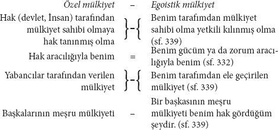
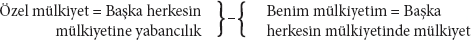
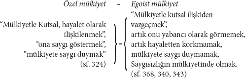

[B. Benim İlişkim]
[I. Toplum][129]
[...] o yine yalnızca ne kadar saf olduğunu gösteriyor. Gericiler, burjuvaların anayasayla doğal olarak ortaya çıkan devleti ilga ettiklerini, kendi devletini kurduklarını ve yaptıklarını; "le pouvoir constituant qui était dans le temps" (doğal olarak) "passa dans la volonté humaine"465, "bu yapma devletin, tıpkı yapma, resmedilen bir ağaca" benzediğini biliyorlardı vb. Fiévée'nin "Correspondance politique et administrive, Paris 1815 – "Appel à la France contre la division des opinions"a[130] –Sarran ainé'nin466 "Le dopreau blanc" adlı eserlerine, Restorasyon döneminin "Gazette de France"ına ve Bonald ile de Maistre'nin ilk dönem eserlerine bakınız vb. Öte yandan liberal burjuvalar ise elbette haklarında, Aziz Max'ın burjuva devlet hakkında bildiğinden daha fazla bilgi sahibi olmadıkları eski cumhuriyetçileri, onların yurtseverliklerinin "une passion factice envers un être abstrait, une idée générale"den467 başka bir şey olmadığı gerekçesiyle suçlarken (Benj. Constant, "De l'esprit de conquêtes, Paris 1814, sf. 93), gericiler de burjuvalara, onların siyasal ideolojilerinin "une mystification que la classe aisée fait subir à celles qui ne le sont pas"tan468 ibaret olduğunu öne sürerek suçladılar. ("Gazette de France", 1831, Fèvrier.) Aziz Sanço 295. sayfada devletin "halkı Hıristiyanlaştırmayı amaçlayan bir kurum" olduğunu iddia ediyor. Devletin temeline ilişkin söyleyebildiği tek şeyse, onun, "hukuka saygı çimentosu ile bir arada tutulduğu" ya da Kutsal'ın kutsala duyulan saygı sayesinde (koşaç olarak Kutsal) "bir arada tutulduğu"dur. (sf. 314)
Not 4.
"Eğer devlet kutsalsa, sansür olmak zorundadır." (sf. 316) "Fransız hükûmeti basın özgürlüğünü bir insan hakkı olarak inkâr etmiyor, fakat bireyden gerçek bir insan olduğuna dair bir teminat istiyor. (Quel bonhomme!469 Jacques le bonhomme, Eylül Yasaları'nı[131] incelemeyi "vazife" edinmeli.) (sf. 380)
Jacques le bonhomme'un bağımsızlaştırdığı ve hakiki devleti gerçekleştirmenin yalnızca birtakım girişimleri olarak gördüğü çeşitli devlet biçimlerine dair en derinlikli açıklamaları bulmakta olduğumuz Not 5.:
"Cumhuriyet, mutlak monarşiden hiç de başka bir şey değildir. Çünkü monarka, prens mi yoksa halk mı dendiğinin bir önemi yoktur. Zira, her ikisi de bir yüceliktir" (Kutsal'dır)... "Meşrutiyet, cumhuriyetten daha ileri bir adımdır, çünkü dağılma sürecindeki devlettir." Bu dağılma şöyle açıklanıyor: "Meşruti devlette... hükûmet mutlak olmak ister ve halk mutlak olmak ister. Bu iki mutlak" (sc. Kutsal) "birbirini öğütecektir." (sf. 302) – "Ben devlet değilim, devletin yaratıcı Hiçliğiyim"; "böylece tüm sorunlar" (anayasa vs. hakkındaki) "hakiki Hiçliklerinde kaybolup gider." (sf. 310)
Devlet biçimlerine dair yukarıdaki önermelerine bu "Hiçlik"in yalnızca farklı bir tarifi olduğunu da eklemesi gerekirdi. Onun da tek yaratımı yukarıdaki şu önermedir: Ben devlet değilim. Aziz Sanço burada, tamamen Alman muallimlerine özgü bir tarzda, elbette meşruti monarşiden çok daha eski olan Cumhuriyet'ten söz ediyor; örneğin Yunan cumhuriyetlerinden.
Kuzey Amerika gibi demokratik bir temsili devlette sınıf çatışmalarının, anayasal monarşilerin daha yeni itildikleri biçime zaten ulaşmış olması konusunda elbette hiçbir şey bilmiyor. Onun anayasal monarşi hakkındaki tumturaklı sözleri, 1842 Berlin takviminden[132] bu yana hiçbir şey öğrenmediğini ve hiçbir şeyi de unutmadığını kanıtlıyor.470
Not 6.
"Devlet, varlığını yalnızca benim kendime duyduğum hor görüye borçludur" ve "bu küçümsemenin ortadan kalkmasıyla birlikte tamamen sona erecektir." (görünen o ki dünyanın bütün devletlerinin ne kadar çabuk "sona ereceği" yalnızca Sanço'ya bağlıdır. Denklemin tersine çevrilmiş haliyle Not 3'ün tekrarı; bakınız: "Mantık") "O ancak benim üstümde olursa, ancak güç ve güç sahibi olarak varolur. Ya da" (kanıtlanmak istenen şeyin tam tersini kanıtlayan garip bir ya da) "siz, sakinlerinin cümleten" ("Ben"den "Biz"e geçen bir sıçrama) "ona hiç aldırış etmediği bir devlet düşünebilir misiniz?" (sf. 377)
"Güç", "güç sahibi", "etmek"472 sözcüklerinin eş anlamlılığı üzerinde durmamıza artık hiç gerek yok.
Her devlette, ona aldırış eden, daha doğrusu devlet içinde ve devlet sayesinde kendine bir mevki edinen kişilerin bulunması olgusundan Sanço, devletin bu kişiler üzerinde bir güç olduğu sonucuna varıyor. Burada söz konusu olan yine yalnızca devlet sabit fikrinin kafadan çıkarılıp atılması gerektiğidir. Jacques le bonhomme hâlâ devletin salt bir fikir olduğunu düşlemeye devam ediyor ve bu devlet fikrinin bağımsız bir güce sahip olduğuna inanıyor. Asıl "devlete inanan, devlet tutkunu, politikacı" (sf. 309) olan odur. Hegel, politik ideologların devlet tasavvurunu idealize eder. Bu tasavvur, sadece onların iradelerinden de olsa tek tek bireylerden hareket ediyordu. Hegel, bu tekillerin ortak iradesini mutlak iradeye dönüştürür ve ideolojinin bu idealleştirilmesini Jacques le bonhomme, doğru devlet anlayışı olarak bona fide473 kabul ediyor ve onu bu inançla Mutlak'ı mutlak ilan ederek eleştiriyor.
5. Burjuva toplumu olarak toplum
Bu bölüm üzerinde biraz daha uzun duracağız; çünkü bu bölüm, pek de kasıtsız olmayan bir şekilde, "Kitap"taki tüm karışık bölümlerin en karışığı olduğu gibi, aynı zamanda bizim azizimizin şeyleri dünyevi biçimleriyle öğrenmeyi ne kadar az başarabildiğini parlak bir biçimde ortaya koyuyor. O, bunları dünyevileştirmek yerine, okurun sadece kendi kutsal tasavvurundan "faydalanmasına izin vererek" bunları kutsallaştırıyor. Asıl burjuva toplumuna geçmeden önce, genel olarak mülkiyet ve mülkiyetin devletle ilişkisi üzerine birtakım yeni açıklamalar duyacağız. Bu açıklamalar, Aziz Sanço'ya, hak ve devlete dair en gözde denklemlerini tekrar ifade etme ve dolayısıyla "inceleme"sini "daha da çeşitli dönüşümler"den ve "kırılmalar"dan geçirme olanağı verirken, yeni oldukları izlenimini de uyandırıyor. Elbette bu daha önce gördüğümüz denklemlerin yalnızca son halkalarını aktarmamız yeterli olacak; zira okur, "Benim Gücüm" başlıklı bölümden bildiği bağlamlarını hatırlayacaktır.
| Özel mülkiyet ya da burjuva mülkiyet |
|
| = | Benim mülkiyetim değil |
| = | Kutsal mülkiyet |
| = | Yabancı mülkiyet |
| = | Saygı duyulan mülkiyet, ya da, yabancı mülkiyete saygı |
Bu denklemlerden aynı zamanda şu antitezler elde edilir:
| Burjuva anlamda mülkiyet | }–{ | Egoist anlamda mülkiyet (sf. 327) |
| "İnsan'ın mülkiyeti" | – | "Benim mülkiyetim" |
| ("İnsanın malvarlığı | – | "Benim malvarlığım") (sf. 324) |
| Denklemler: İnsan | = | Hak |
| = | Devlet zoru | |
| Özel mülkiyet ya da burjuva mülkiyet | = | Meşru mülkiyet (sf. 324) |
| = | Hak aracılığıyla benim olan (sf. 332) | |
| = | Garanti edilmiş mülkiyet | |
| = | Yabancıların mülkiyeti | |
| = | Yabancıya ait mülkiyet | |
| = | Hakka ait mülkiyet (sf. 367) | |
| = | Hak mülkiyeti (sf. 332) | |
| = | Hak kavramı | |
| = | Tinsel bir şey | |
| = | Tümel | |
| = | Faraziye | |
| = | Saf düşünce | |
| = | Sabit fikir | |
| = | Hayalet | |
| = | Hayaletin mülkiyeti (sf. 368, 324, 332, 367, 369) | |
| Özel mülkiyet | = | Hakkın mülkiyeti |
| Hak | = | Devletin zoru |
| Özel mülkiyet | = | Devletin zoru altındaki mülkiyet, |
| = | Devlet mülkiyeti ya da | |
| Mülkiyet | = | Devlet mülkiyeti |
| Devlet mülkiyeti | = | Benim mülkiyetim olmayan |
| Devlet | = | Yegâne sahip (sf. 339, 334) |
Şimdi antitezlere geliyoruz.

Bu antitezler, örneğin güç yerine tam yetki konursa, ya da daha önce de verilmiş olan formüller kullanılırsa, yüzlerce başka formülle tekrarlanabilir.

Ya da aynı zamanda:

Yukarıda verilen denklemlerdeki ilişki ya da koşaç olarak yabancılaşma, ayrıca şu antitezlerle de ifade edilebilir:

Yukarıdaki denklem ve antitezlerin içerdiği kendine mal etme usullerini "Birlik" konusuna geçtiğimizde ele alacağız; şimdilik hâlâ "kutsal toplum"da bulunduğumuzdan, burada yalnızca kutsallaştırmalarla ilgileniyoruz.
Not. İdeologların mülkiyet ilişkisini neden –farklı tarihsel dönemlerdeki farklı biçimi bireylerin "İnsan"ı nasıl tasavvur ettiğine göre belirlenen– "İnsan"ın bir ilişkisi olarak ele alabildiklerini "Hiyerarşi" bölümünde incelemiştik. Burada okura bu hatırlatmada bulunmak yeterli olacaktır.
İnceleme 1: Toprak mülkiyetinin parsellenmesi, feodal yükümlülüklerin geri alınması ve küçük toprak mülkiyetinin büyük toprak mülkiyeti tarafından yutulması üzerine.
Tüm bu meseleler, kutsal mülkiyetten ve burjuva mülkiyeti = Kutsal'a saygı denkleminden geliştirilmektedir.
1. "Burjuva anlamda mülkiyet, kutsal mülkiyet demektir; öyle ki, ben senin mülkiyetine saygı göstermek zorundayımdır. 'Mülkiyete saygı!' Bu nedenle politikacılar herkesin kendi küçük mülkiyet parçasına sahip olmasını isterler ve bu çabalarıyla kısmen inanılmaz bir parselleme meydana getirmişlerdir." (sf. 327, 328) – 2. "Politik liberaller, tüm feodal yükümlülüklerin olabildiğince ortadan kaldırılmasını ve herkesin kendi arazisi üzerinde, bu arazi sadece tek bir insanın gübresiyle kâfi derecede gübrelenebilecek kadar toprak muhteviyatına sahip bile olsa" (arazi toprak muhteviyatına sahip!) "özgür bir efendi olmasını dert edinirler... Ne kadar küçük olursa olsun, yeter ki kendine ait, yani saygı duyulan bir mülkiyet olsun. Bu türden mülk sahibi ne kadar çok olursa, devlet de o kadar çok özgür insana ve iyi vatansevere sahip olur." (sf. 328) 3. "Politik liberalizm, dinsel olan her şey gibi, saygıya, insancıllığa, sevginin erdemlerine güvenir. Bu nedenle de tükenmeyen bir hoşnutsuzluk içinde yaşar. Çünkü insanlar pratikte hiçbir şeye saygı duymazlar ve her gün küçük mülkler büyük mülk sahipleri tarafından satın alınır ve 'özgür insanlar' da yevmiyeli işçilere dönüşür. Buna karşılık, 'küçük mülk sahipleri' büyük mülkiyetin de kendilerine ait olduğunu düşünselerdi, ne saygılı bir biçimde ondan uzak durmuş ne de ondan dışlanmış olurlardı." (sf. 328)
1. Demek ki öncelikle burada, Aziz Sanço'nun Kutsal olduğu dışında hakkında hiçbir şey bilmediği parselleme hareketinin tamamı, "Politikacılar"ın "kafalarına koydukları" salt bir "imgelem"den hareketle açıklanmaktadır. "Politikacılar", "mülkiyete saygı duyulmasını" talep ettikleri için, bu yüzden parsellemeyi "istiyorlar". Üstelik bu parselleme, yabancı mülkiyete saygı gösterilmeyerek her yerde hayata geçirilmiş bulunuyor! "Politikacılar" "kısmen inanılmaz bir parsellemeye" gerçekten "sebep oldular". Anlayacağımız, Fransa'da daha devrimden önce olduğu gibi, günümüzde de hâlâ İrlanda'da ve kısmen Galler'de toprağın tarım bağlamında parsellenmesinin çoktan mevcut oluşu ve büyük ölçekli tarımın girişi için gerekli sermaye ve tüm diğer koşulların eksik oluşu, "Politikacılar"ın eylemiydi. Kaldı ki Aziz Sanço, "Politikacılar"ın günümüzde parsellemeyi ne kadar hayata geçirmek "istediklerini", hem işçi rekabetini zayıflatmasından hem de politik nedenlerden ötürü hoşnut olmayan Fransız burjuvazisine bakarak anlayabilirdi. Yine, bilumum gericilerin, parsellemeyi, toprak mülkiyetinin modern, sınai, pazarlanabilir, kutsal olmaktan çıkarılmış mülkiyete dönüştürülmesinden ibaret gördüklerini anlayabilirdi (ki bunun için yaşlı Arndt'ın "Hatıralar"ına bakması yeterdi). Burjuvaların, iktidarı ele geçirir geçirmez bu dönüşümü –parselleme yoluyla olduğu kadar, pekâlâ kârı aşan toprak rantlarının kaldırılması yoluyla da gerçekleşebilecek olan bir dönüşüm– hangi ekonomik nedenlerden dolayı gerçekleştirmek zorunda olduklarını burada azizimize daha fazla izah edecek değiliz. Bu dönüşümün meydana geldiği biçimin, bir ülkenin sanayisinin, ticaretinin, deniz ulaşımının vb. gelişim düzeyine nasıl bağlı olduğunu da izah edecek değiliz. Parsellemeye ilişkin yukarıdaki önermeler, çeşitli yerlerde, "şurada ve burada" büyük çaplı bir parsellemenin yaşandığı basit gerçeğinin tumturaklı bir biçimde farklı sözcüklerle, Sanço'muzun hem her şeye uyan hem de hiçbir şeye uymayan kutsallaştırıcı konuşma tarzıyla ifade edilmiş tarifinden başka bir şey değildir. Bunun dışında Sanço'nun yukarıdaki önermeleri, sadece Alman küçük burjuvasının parsellemeye dair fantezilerini içermektedir; pek tabii bu parselleme onun için Yabancı, "Kutsal"dır. Karşılaştırınız: "Politik Liberalizm".
2. Feodal yükümlülüklerin kaldırılması; yalnızca Almanya'da rastlanan bir musibet. Almanya'da hükûmetlerin sırf komşu ülkelerin gelişmişlikleri nedeniyle ve düştükleri mali sıkıntılar dolayısıyla hayata geçirmek zorunda kaldıkları bu musibeti Azizimiz, "politik Liberaller"in "özgür insanlar ve iyi yurttaşlar" yaratabilmek için istedikleri bir şey olarak kabul ediyor. Sanço'un ufku yine Pomeranya Eyalet Meclisi'nin ve Saksonya Temsilciler Meclisi'nin ötesine geçemiyor. Almanlara özgü bu feodal yükümlülüklerin kaldırılması asla hiçbir politik ya da ekonomik sonuç doğurmadı ve bir yarım-önlem olarak tamamen etkisiz kaldı. Ticaretin ve sanayinin gelişmeye başlamasından ve toprak sahiplerinin paraya duydukları ihtiyaçtan doğan 14. ve 15. yüzyıllardaki tarihsel bakımdan önem taşıyan feodal yükümlülüklerin kaldırılışı hakkında Sanço elbette yine hiçbir şey bilmiyor. Sanço'nun sandığı üzere iyi yurttaşlar ve özgür insanlar yaratmak için Almanya'da feodal yükümlülükleri kaldırmak isteyen H. Stein ve Vincke gibi insanlar, bu aynı insanlar daha sonra "iyi yurttaşlar ve özgür insanlar" yaratmak için, bugün Vestfalya'da yapılmaya çalışıldığı gibi feodal yükümlülüklerin yeniden geri getirilmesi gerektiğini savundular. Buradan "saygı"nın tıpkı Allah korkusu gibi her derde deva olduğu sonucu çıkmaktadır.
3. Sanço'ya göre, küçük toprak mülkiyetinin "büyük toprak sahipleri" tarafından "satın alınıp ele geçirilmesinin" nedeni, pratikte "mülkiyete saygı" duyulmamasıdır. Rekabetin en yaygın iki sonucu –yoğunlaşma ve vurgunculuk– özellikle de yoğunlaşma olmadan var olamayan rekabetin kendisi Sanço'muza burada, rekabetin sınırları içinde hareket eden burjuva mülkiyetin çiğnenmesi olarak görünmektedir. Burjuva mülkiyet daha baştan kendi varlığı dolayısıyla çiğnenmektedir. Sanço'nun düşüncesine göre, mülkiyete saldırmaksızın bir şey satın alınmamalıdır.*70 Aziz Sanço'nun toprak mülkiyetindeki yoğunlaşmanın iç yüzünü ne denli derinlemesine anlamış olduğu, onu yoğunlaşmanın sadece en belirgin eyleminden, salt "vurgunculuk"tan ibaret görmesinden anlaşılıyor. Bu arada küçük mülk sahiplerinin, bundan dolayı, nasıl mülkiyet sahibi olmaktan çıkıp yevmiyeli işçiler haline geldiklerini Sanço'nun söylediklerinden kestirmek güç. Zira kendisi bir sonraki sayfada (sf. 329) büyük bir ciddiyetle Proudhon'a karşı, "tarladan yararlanılmasından kendilerine düşen payın", yani emek ücretinin "sahibi" kaldıklarını açıklıyor. "Bu arada bazen tarihte", dönüşümlü olarak büyük toprak mülkiyetinin küçüğünü ve küçüğün büyüğünü yuttuğuna "rastlanabiliyor". Ve "insanların pratikte hiçbir şeye saygı duymamaları" Aziz Sanço'un gözünde rahatlıkla bu iki olguya yeterli bir neden oluşturabiliyor. Aynı şey, toprak mülkiyetinin geri kalan çok çeşitli biçimleri için de geçerli. Ardından da o bilgece "küçük mülkiyet sahipleri... -selerdi!" vb. lafını yapıştırıyor! "Eski Ahit"te, Aziz Sanço'nun spekülatif tarzda öncekilere, sonrakilerin deneyimlerini nasıl düşündürttüğünü görmüştük. Şimdi de Sanço'nun, ahkâm kesen475 bir tarzda, öncekilerin, yalnızca sonrakilerin kendileri hakkındaki düşünceleri üzerine değil, bizzat kendi saçmalığı üzerinde de düşünmemiş olmasından şikâyet ediyor. Ne muallimce "bilgelik"476! Terörcüler, Napolyon'u tahta getireceklerini düşünselerdi – Runnymede ve Magna Carta'nın[133] İngiliz baronları 1849 yılında Tahıl Yasaları'nın[20] kaldırılacağını düşünselerdi – Krezüs, Rothschild'in kendisini zenginlikte katlayacağını düşünseydi – Büyük İskender, Rotteck'in kendisini yargılayacağını ve imparatorluğunun Türklerin eline düşeceğini düşünseydi – Themistokles, Persleri, Çocuk Otto'nun lehine bozguna uğratacağını düşünseydi – Hegel, böylesine "bayağı"477 bir biçimde Aziz Sanço tarafından istismar edileceğini düşünseydi –olsaydı, etseydi! Hangi "küçük mülk sahipleri"nden bahsettiğini zannediyor Aziz Sanço acaba? Ancak büyük toprak mülkiyetinin parçalanmasının bir sonucu olarak "küçük mülkiyet sahipleri" haline gelen mülkiyetsiz köylülerden mi yoksa bugün yoğunlaşma nedeniyle yıkıma uğratılanlardan mı? Aziz Sanço'nun her iki duruma da yaklaşımı tıpa tıp aynı. Birinci durumda, kendilerini hiçbir şekilde "büyük mülkiyet"in dışında tutmadılar, aksine her biri diğerleri tarafından dışlanmadığı ve gücü yettiği ölçüde mülkiyet edindi. Ne var ki söz konusu bu güç, Stirner'in övüp durduğu güç değil, tamamen ampirik ilişkilerin belirlediği bir güçtü; örneğin, burjuva toplumunun şimdiye kadarki tüm gelişiminin, yerelin özelliklerinin ve yakın çevresiyle büyüklü küçüklü bağlarının, mülkiyete geçen arazinin büyüklüğünün ve onu ele geçirenlerin sayısının, sanayi, ulaşım, iletişim araçları ve üretim aygıtlarının ilişkilerinin vb. vb. belirlediği bir güçtü. Kendilerini büyük toprak mülkiyetinin ne kadar az dışında tuttukları, birçoklarının bizzat büyük toprak sahipleri haline gelmelerinden bile anlaşılıyor. Sanço, bu köylülerin o zamanlar, henüz var bile olmayan ve o dönem onlar açısından yegâne devrimci biçimi oluşturan parsellemeyi atlayıp kendilerini bir sıçrayışta kendisiyle barışık egoizme fırlatmaları gerektiğine dair mantıksız talebiyle, kendisini Almanya'nın bile karşısında gülünç duruma düşürüyor. Onun bu saçmalığı bir tarafa, onların komünist bir tarzda örgütlenmeleri imkânsızdı; çünkü komünist bir birliğin ilk koşulunu yerine getirmekten, toprakları ortak işleme olanaklarından tamamen yoksundular ve çünkü parselleme daha çok, böylesi bir birlik ihtiyacını sonradan doğuran koşullardan biriydi. Genel olarak komünist bir hareket asla kırsaldan değil ancak kentlerden doğabilir.
Aziz Sanço'nun yıkıma uğrayan küçük mülkiyet sahiplerinden söz ettiği ikinci durumda, bunlar, tamamen mülksüz sınıfa ve sanayi burjuvazisine karşı, hâlâ büyük toprak sahipleri ile ortak çıkarlara sahiptirler. Bu ortak çıkarın olmaması durumunda da, büyük toprak mülkiyetini ele geçirmek için gerekli güçten yoksundurlar, çünkü dağınık halde yaşarlar; tüm faaliyetleri ve yaşam koşulları da böyle bir ele geçirmenin ilk koşulu olan birleşmelerini imkânsız hale getirir ve böylesi bir hareket yine, hiçbir şekilde kendilerine bağlı olmayan çok daha genel bir hareketin varlığını gerektirir. Sonuçta Sanço'nun tüm tiradı, onların başkalarının mülkiyetine duydukları saygıyı kafalarından çıkarıp atmaları gerektiğine varıyor. Bu konuda ileride birkaç söz daha işiteceğiz.
Son olarak, gelin bir önermeyi daha ad acta478 alalım: "Pratikte insanlar hiçbir şeye saygı duymazlar işte"; yani görünen o ki mesele hiç de "saygı" değildir "işte".
İnceleme No. 2. Özel mülkiyet, devlet ve hukuk.
"Olsaydı, etseydi!"
Aziz Sanço, hukukçuların ve politikacıların özel mülkiyet hakkındaki tedavüldeki düşüncelerini ve ona karşı yürüttükleri polemiği de bir an için bir tarafa bırakmış "olsaydı"; bu özel mülkiyeti bir kez olsun kendi ampirik varlığıyla, bireylerin üretici güçleriyle bağlamı içinde ele almış olsaydı, o zaman, şimdi bizi eğlendireceği tüm o Süleyman bilgeliği, buharlaşıp hiçliğe karışırdı. O zaman, özel mülkiyetin, üretim ilişkilerinin belirli gelişim aşamaları için zorunlu bir ekonomik ilişki biçimi –ta ki özel mülkiyetin kendileri için engelleyici bir pranga halini aldığı üretici güçler yaratılana kadar, kurtulmanın mümkün olmadığı ve doğrudan doğruya maddi yaşamın üretiminde vazgeçilebilir hale gelmediği bir ekonomik ilişki biçimi– olduğunu (Habakkuk[134] gibi capable de tout479 olmasına rağmen) gözden kaçırması güç "olurdu". Bunu yapmış "olsaydı" Sanço'nun yeni, egoist bir ahlak sistemi kurabilmek adına bütün dünyayı teolojik bir ahlak sistemine dönüştürmek yerine, maddi ilişkilerle uğraşması okurun gözünden de kaçamazdı. Bunu yapmış "olsaydı", asıl meselenin "saygı"dan ve saygısızlıktan tamamen başka şeyler olduğunu gözden kaçırması mümkün olmazdı. "Olsaydı, olsaydı!"
Bu arada bu "olsaydı", Sanço'nun yukarıdaki önermesinin bir yankısıdır yalnızca, çünkü eğer bütün bunları yapmış "olsaydı", pek tabii kitabını yazması mümkün olmazdı.
Aziz Sanço, siyasetçilerin, hukukçuların ve diğer ideologların ampirik ilişkileri baş aşağı çeviren illüzyonlarının doğruluğuna harfiyen inanıp benimsediği ve buna ayrıca, Almanlara özgü tarzıyla kendi katkısını da yaptığı için özel mülkiyet onun gözünde devlet mülkiyetine ya da başka bir deyişle hak mülkiyetine dönüşüyor. Ve şimdi artık yukarıdaki denklemlerini doğrulamak için bunun üzerinden bir deney gerçekleştirebilir. Gelin öncelikle özel mülkiyetin devlet mülkiyetine dönüştürülmesine bakalım.
"Mülkiyeti belirleyen yalnızca zordur" (zoru belirleyen şimdilik daha çok mülkiyettir) "ve ister yurttaşın devleti, ister sefillerin devleti" (Stirnerci "Birlik") "isterse de basitçe insanın devleti olsun, yegâne Kudretli devlet olduğundan yegâne mülkiyet sahibi olan odur." (sf. 333)
Alman "yurttaşın devleti" olgusunun yanı sıra burada yine Sanço'nun ve Bauer'in fantezileri aynı sırayla kendini gösterirken, tarihsel bakımdan önem taşıyan devlet biçimlerine hiçbir yerde rastlanmıyor. O devleti öncelikle bir şahsa, "Kudretli"ye dönüştürüyor. Egemen sınıfın, ortaklaşa egemenliğini kamusal zor olarak, devlet olarak kurması olgusunu Sanço, Alman küçük burjuva tarzda eğip bükerek "Devlet"in kendisini, bu egemen sınıfa karşı üçüncü bir güç olarak kurması ve karşısındaki tüm zoru soğurup kendisinde toplaması olarak anlıyor. Şimdi bu inancını, bir dizi örnek ışığında kanıtlayacak.
Mülkiyet, her dönem olduğu gibi burjuvazinin egemenliğinde belirli, önceleri ekonomik, üretici güçlerin ve ekonomik ilişkilerin gelişim düzeyince belirlenen ve zorunlu olarak hukuki ve siyasi bir ifade kazanan koşullara bağlı ise; o halde safdilli Aziz Sanço sanır ki,
"Devlet, tıpkı her şeyi olduğu gibi –örneğin evliliği– mülkiyet sahipliğini de" (car tel est son bon plaisir480) "koşullara bağlar". (sf. 335)
Burjuvalar devletin kendi özel çıkarlarına karışmasına izin vermedikleri ve ona ancak kendi güvenliklerine ve rekabetin sürmesine yetecek kadar güç verdikleri için; burjuvalar genel olarak ancak özel ilişkileri gerektirdiği ölçüde vatandaş olarak davrandıkları için Jacques le bonhomme, onların devletin karşısında "Hiç" olduklarına inanır.
"Devlet salt kendisinin zenginliğiyle ilgilenir; Michel'in zengin, Peter'in yoksul olması onun umurunda değildir... onun karşısında ikisi de Hiçtir." (sf. 334)
Sayfa 345'te aynı hikmeti, devlet katında rekabetin hoş görülmesi olgusundan çıkarır.
Bir demiryolu işletmesinin yönetim kurulu, hissedarlarıyla, ancak onlar ödemelerini yaptıkları ve kâr paylarını aldıkları ölçüde ilgilendiği için, Berlinli muallimimiz tüm masumiyetiyle buradan, "tıpkı biz günahkârların Tanrı karşısında olduğumuz gibi", hissedarların da yönetim kurulu karşısında bir hiç oldukları sonucuna varıyor. Sanço, devletin özel mülkiyet sahiplerinin faaliyetleri karşısındaki acizliğinden hareketle, özel mülkiyet sahiplerinin devlet karşısındaki, kendisinin de her ikisi karşısındaki acizliğini kanıtlıyor.
Yanı sıra, burjuvazi kendi mülkiyetinin korunmasını devlet içinde organize etmiş olduğundan, dolayısıyla da "Ben" bir "fabrikatörün" fabrikasını, ancak burjuvazinin koşulları, yani rekabet koşulları dâhilinde elinden alabileceği için Jacques le bonhomme sanır ki;
"devlet fabrikaya mülkiyet olarak sahipken, fabrikatör ona ancak tımar481 olarak, mülk olarak sahiptir." (sf. 347)
Aynı şekilde; evimin bekçiliğini yapan köpek eve "mülkiyet olarak" sahipken, Ben, eve ancak köpekten aldığım "tımar olarak, mülk olarak" sahibim.
Özel mülkiyetin üstü örtülü maddi koşulları sıklıkla özel mülkiyete dair hukuki illüzyonla kaçınılmaz olarak çelişki içine girdiğinden –örneğin kamulaştırma vakalarında olduğu gibi–, Jacques le bonhomme şu sonuca varıyor:
"sair zamanlarda, yalnızca devletin mülkiyet sahibi, tekilin ise vassal olduğu üstü örtülü ilke burada apaçık göze çarpıyor." (sf. 335)
"Burada göze çarpan" tek şey, dünyevi mülkiyet ilişkilerinin "kutsallık" örtüsünün ardında bizim mert yurttaşımızın gözünden kaçmış olması ve onun, uygar ülkelerde muallimlerin bile ulaştığı "kültür basamağı"na "tırmanmak" için hâlâ Çin'den bir "cennet merdiveni" ödünç almak zorunda kalması gerçeğidir. Sanço, özel mülkiyetin varoluşunun bir parçası olan çelişkileri burada nasıl özel mülkiyetin yadsınmasına dönüştürüyorsa, burjuva aile içerisindeki çelişkilere de yukarıda gördüğümüz gibi aynı muameleyi yapar.
Burjuvalar, genel olarak da burjuva toplumunun tüm üyeleri, ortak çıkarlarını güvence altına almak için kendilerini "biz" olarak, tüzel kişilik olarak, devlet olarak düzenlemek ve bu sayede yaratılan kolektif erkin yetkisini en başta iş bölümü uğruna az sayıda kişinin eline emanet etmek zorunda olduklarından, Jacques le bonhomme sanır ki;
"Herkes, yalnızca devletin Ben'ini içinde taşıdığı ya da toplumun sadık bir üyesi olduğu sürece mülkiyetten yararlanma hakkına sahiptir... Bir devlet-Ben'i, iyi bir yurttaş ya da tebaa olan kişi, kendine ait değil, böylesi bir Ben olarak tımarı sıkıntı çekmeden elinde bulundurur." (sf. 334, 335)
Bu bakış açısına göre herkes ancak yönetim kurulunun "Ben"ini "içinde taşıdığı" sürece demiryolu şirketinde bir hisseye sahip olabilir; dolayısıyla da ancak bir aziz olarak demiryolu şirketinde hisse sahibi olunabilir.
Özel mülkiyet ile devlet mülkiyetinin özdeşliğine kendisini bu şekilde ikna eden Aziz Sanço, sözlerine artık şöyle devam edebilir:
"Tekilin kendisinden aldığını devletin keyfi biçimde onun elinden almaması, yalnızca, devletin kendi kendisini soymamasıyla aynı anlama gelir." (sf. 334, 335)
Aziz Sanço'nun başkalarının mülkünü keyfi olarak gasp etmemesi, onun kendi kendini soymamasıyla aynı anlama gelir; zira o, bütün mülkleri kendi mülkü olarak "görmektedir".
Kimse bizden, Aziz Sanço'nun devlet ve mülkiyet hakkındaki geri kalan fantezilerini; örneğin devletin tekilleri mülkiyet ile "terbiye ettiğini" ve "ödüllendirdiğini", sadakat göstermeyen yurttaşları mahvetmek için özel bir husumetle yüksek mahkeme harçları icat ettiğini vs. vs.; genel olarak, eski Alman hukukçular arasında bile yaygın olan ve burada cafcaflı iddialarla ortaya konan, devletin kadir-i mutlaklığına dair küçük burjuva-Alman tasavvurunu daha derinlemesine ele almamızı beklemesin.
Aziz Sanço, devlet mülkiyeti ile özel mülkiyetin yeteri kadar kanıtlanan özdeşliğine bir de etimolojik eş anlamlılıkla açıklık kazandırmaya çalışıyor ve bunu yaparken de bilgeliğinin en ambas posaderas483 şamarlıyor.
"Benim özel mülkiyetim sadece, devletin kendisine ait olandan diğer devlet üyelerini mahrum bırakarak (gasp ederek) bana temlik ettiği şeydir: Bu, devlet mülkiyetidir." (sf. 339)
Tesadüfe bakın ki, gerçek bunun tam tersidir. Bu etimolojik esprinin ilişkilenebileceği tek örnek Roma'dır; Roma'da özel mülkiyet devlet mülkiyetiyle dolaysız bir karşıtlık içindeydi. Devletin pleblere özel mülkiyet verdiği doğrudur; ne var ki bunu yaparak "başkalarını" kendi özel mülklerinden mahrum bırakmadı, tersine bu plebleri kendi devlet mülkiyetinden (ager publicus484[8]) ve siyasi haklardan mahrum bıraktı. Bu yüzden de onlara, Aziz Sanço'nun düşlediği gibi "diğer devlet üyeleri" değil, privati, soyulmuş kimseler deniyordu. Jacques le bonhomme, "Kutsal"ın önsel bilgisine sahip olmasının mümkün olmadığı pozitif olgulardan söz etmeye başlar başlamaz, tüm ülkeler, tüm diller ve tüm devirler nezdinde kendisini rezil ediyor.
Devletin tüm mülkiyeti soğurması karşısında düştüğü çaresizlik onu, gerisin geri en içsel "öfkeli" öz-bilincine sürükler. Orada, bir yazıcı olduğunu keşfetmesiyle şaşırır. Bu şaşkınlığını aşağıdaki tuhaf sözlerle dile getirir:
"Devlete karşın bana hâlâ büyük bir gücün, kendi üzerimdeki gücün kaldığını giderek daha belirgin bir şekilde hissediyorum."
Bu da, şöyle açılmaktadır:
"Düşüncelerimle gerçek, ticaretini yapabileceğim bir mülkiyete sahibim."
"Salt tinsel zenginliğe sahip olan İnsan", "Sefil" Stirner, demek ki çaresizlik içinde düşüncelerinin ekşimiş kesik sütüyle ticaret yapma kararı alıyor.[135] Peki, devlet onun düşüncelerinin kaçak mal olduğunu ilan etmesi durumuna karşı nasıl kurnazlık düşünüyor? Şunu dinleyin:
"Onlardan vazgeçer" (kuşkusuz büyük bir bilgelikle) "ve yerlerine başkalarını koyarım" (yani onun bu düşünce değişimini485 kabul edecek kadar kötü bir işadamı bulabilirse). "Böylece, bunlar benim yeni, trampa edilmiş mülküm haline gelir." (sf. 339)
Namuslu yurttaşımız, mülkiyetini dürüstçe satın aldığını yazılı halde ortaya koymadıkça rahat etmez. Berlinli yurttaşın başına gelen tüm siyasi felaketler ve geçirdiği polisiye soruşturmalar karşısında bulduğu teselliye bakın: "Düşünceler gümrükten muaftır!"
Özel mülkiyetin devlet mülkiyetine dönüştürülmesi en sonunda, burjuvanın yalnızca, burjuva türünün –ki bir bütün olarak devlet adını alır ve tekile mülkiyet ödünç verir– bir numunesi olarak mülk sahibi olduğu tasavvuruna indirgeniyor. Burada mesele yine baş aşağı durmaktadır. Diğer tüm sınıflarda olduğu gibi burjuva sınıflarda da, ortak ve genel koşullara dönüştürülen, yalnızca, sınıfın tek tek üyelerinin altında yaşadıkları ve mülk sahibi oldukları kişisel koşullardır. Eskiden Almanya'da bu türden felsefi illüzyonlar kabul görebildiyse de, bunlar, dünya ticaretinin, burjuva kazancın siyasetten tamamen bağımsız, siyasetin ise burjuva kazanca tümüyle bağımlı olduğunu yeterince kanıtladığı günümüzde artık gülünç hale gelmiştir. Daha 18. yüzyılda siyaset ticarete öylesine bağımlıydı ki, örneğin, Fransız hükûmeti borç istediğinde Hollandalılar özel bir şahsın devlete kefil olmasını talep etmişti.
"Benim değersizliğim"in ya da "pauperizm486"in, devletin "değerlendirilmesi" ya da "bekası" olması (sf. 336), Stirner'in 1001 denklemlerinden biridir. Burada onu anmamız, bu vesileyle pauperizm hakkında kimi yeni şeyler işitmemizden ötürüdür yalnızca.
"Pauperizm, benim değersizliğimdir; kendimi değerlendiremiyor olmamın görüngüsüdür. Bu nedenle devlet ve pauperizm bir ve aynı şeydir... Devlet daima benden fayda sağlamayı amaçlar; yani beni sömürmeyi, kullanmayı, tüketmeyi amaçlar; bu tüketme, yalnızca bir proles487 sağlamamdan (proletarya) ibaret bile olsa. Devlet, onun yaratığı olmamı istiyor." (sf. 336)
Burada, kendi özgülüğünü her yerde ve her zaman ortaya koyabilmesine karşın, kendisini değerlendirmenin, kendisine ne kadar az bağlı olduğunun ortaya çıkmasını; burada öz ve görüngünün, bir kez daha önceki açıklamalara karşıt bir şekilde tümüyle birbirinden ayrıştırılıyor olmasını bir yana bırakırsak, Bonhomme'umuzun yukarıdaki küçük burjuva görüşü, devletin "kendisini sömürmek" istediği görüşüyle karşılaşıyoruz yine. İlgimize mazhar olan yalnızca, burada safiyane bir şekilde modern devlete sokulan proletarya sözcüğünün antik Roma'ya dayanan etimolojik kökenidir. Aziz Sanço gerçekten de, modern devletin geliştiği her yerde, "bir proles sağlama"nın devlet açısından, yani resmî burjuva açısından proletaryanın tam da en nahoş etkinliği olduğunu bilmiyor mu acaba? Belki de kendi iyiliği için Aziz Sanço'nun Malthus'u ve Bakan Duchâtel'i de Almancaya çevirmesi gerekirdi.488 Aziz Sanço demin, bir Alman küçük burjuvası olarak, "giderek daha belirgin bir biçimde" kendisine "devlete karşın hâlâ büyük bir gücün kaldığını" "hissediyordu"; yani devlete inat düşünme eyleminde bulunma gücü. Eğer bir İngiliz proleteri olsaydı, kendisine, devlete inat çocuk yapma "gücü kaldığını" hissedecekti.
Devlete karşı yakınmaya devam! Pauperizm teorisine devam! Önce "Ben" olarak "un, keten bezi ya da demir ve kömür" "yaratıyor". Böylece daha baştan iş bölümünü ortadan kaldırıyor. Ardından, "uzun uzadıya" emeğinin karşılığının değerine uygun ödenmediğinden "yakınmaya" başlıyor ve öncelikle ödemeyi yapanlarla anlaşmazlığa düşüyor. Bunun üzerine devlet "uzlaştırmacı" bir biçimde araya giriyor.
"Onun" (yani devletin) "benim metama ve emeğime biçtiği fiyatla yetinmezsem, daha çok, metamın fiyatını kendim belirleme çabasındaysam, yani kendimi kârlı hale getirme çabasındaysam, o halde öncelikle" (görkemli bir "öncelikle" – devletle değil, aksine) "metanın alıcılarıyla anlaşmazlığa düşerim."
Şimdi bu alıcılarla "doğrudan ilişki" içine girmek, yani "onların yakasına yapışmak" isterse, devlet "müdahale eder" ve "insanı insandan çekip ayırır" (gerçi, söz konusu olan "İnsan" değil, işçi ve işveren ya da birbirine karıştırıp durduğu, metanın satıcısı ve alıcısıdır); üstelik devlet bunu "ruh olarak" (her halükârda kutsal Ruh olarak) "aralarına girmek" gibi bir kötü niyetiyle yapar.
"Daha yüksek ücret talep eden işçiler, bu taleplerini zor yoluyla elde etmeye çalıştıkları anda suçlu muamelesi görür." (sf. 337)
İşte karşımızda yine seçmece bir demet saçmalık var. Bay Senior, öncesinde Stirner ile "doğrudan ilişki"ye girmiş olsaydı –özellikle de devletin bu durumda muhtemelen "insanı insandan çekip ayırmayacağı" için–, emek ücreti üzerine mektuplarını[136] yazma zahmetinden kurtulabilirdi. Sanço burada devlete üç kez sahne aldırıyor; önce "uzlaştırıcı", ardından fiyat belirleyici, en sonunda da "ruh", "Kutsal" olarak. Özel mülkiyet ile devlet mülkiyetini muhteşem bir şekilde özdeşleştirdikten sonra Aziz Sanço'nun devlete emek ücretini de belirletiyor olması, bu dünyanın meselelerindeki tutarlılığına delalet ettiği kadar cehaletinin büyüklüğüne de delalet ediyor. İngiltere, Amerika ve Belçika'daki "daha yüksek ücret elde etmek isteyen işçiler"in hiç de hemen "suçlu" muamelesi görmemeleri, aksine sıklıkla bu ücreti gerçekten elde ediyor olmaları da azizimizin bihaber olduğu bir olgudur ve onun emek ücretine dair efsanesini bir anda ıskartaya çıkartıyor. İşçilerin, işverenlerin "yakasına yapıştıklarında" devlet "araya girmese" bile, kendileri işçi ve hasımları kapitalist olarak kaldığı sürece, bunu yapmış olmakla henüz hiçbir şey elde etmiş olmadıkları, kurdukları birlikler ve grevler aracılığıyla elde ettiklerinden çok daha azını elde ettikleri olgusu da Berlin'de dahi kabul görecek bir olgudur. Yine aynı şekilde, rekabete dayalı burjuva toplumunun ve onun burjuva devletinin, tüm maddi zemini gereği, yurttaşlar arasında rekabet mücadelesi dışında hiçbir mücadeleye izin veremeyeceğini ve insanlar birbirlerinin "yakasına yapıştıklarında", "ruh" olarak değil, süngülerle araya girmek zorunda olduklarını da ayrıca açıklamaya gerek yok.
Bu arada Stirner'in, bireyler burjuva mülkiyet temelinde zenginleştiklerinde sadece devletin zenginleştiğine dair fikri, ya da şimdiye kadar tüm özel mülkiyetin devlet mülkiyeti olduğuna dair fikri, bir kez daha tarihsel ilişkiyi baş aşağı çevirmektedir. Burjuva mülkiyetin gelişimi ve birikimiyle, yani ticaret ve sanayinin gelişimiyle birlikte bireyler giderek daha fazla zenginleşirken devlet giderek daha fazla borçlanmıştır. Bu olgu, daha ilk İtalyan ticaret cumhuriyetlerinde kendini gösterirken, daha sonraları en uç ifadesini geçen yüzyıldan itibaren Hollanda'da buldu. Borsa spekülatörü Pinto489 daha 1750'de bu olguya dikkat çekmişti. Şimdi aynı olgu İngiltere'de meydana gelmektedir. Dolayısıyla da burjuvazi para biriktirir biriktirmez devlet ondan borç dilenmek zorunda kalır ve sonunda burjuvazi tarafından âdeta satın alınır. Bu, burjuvazinin karşısında hâlâ bir başka sınıfın bulunduğu, yani devletin her iki sınıf arasında belirli bir bağımsızlık görünümünü koruyabildiği bir dönemde meydana gelir. Devlet, bu satın almadan sonra bile paraya ihtiyaç duymaya devam eder, dolayısıyla burjuvaziye bağımlı olmayı sürdürür. Buna rağmen, burjuvazinin çıkarları gerektirdiğinde, devlet her zaman, kendisinden daha az gelişmiş, dolayısıyla borç yükü daha az olan devletlerinkine göre daha büyük mali kaynakları el altında bulundurabilmektedir. Fakat en az gelişmiş Avrupa devletleri –Kutsal İttifak devletleri[137]– dahi karşı konulmaz bir biçimde aynı akıbete doğru yol almaktalar ve burjuvalar tarafından ele geçirilecekler. O zaman Stirner onları, özellikle de devlet erkinin "kötü" hale gelmiş "yurttaşlar"a satılacağı anı geciktirmek için beyhude bir çaba içinde olan kendi egemenini, özel mülkiyet ile devlet mülkiyetinin özdeşliği teziyle teselli edebilir.
Şimdi, aynı saçmalığı bir başka biçim altında yeniden işittiğimiz yere, özel mülkiyet ile hak arasındaki ilişki meselesine gelelim. Görünen o ki, özel mülkiyet ile devlet mülkiyetinin özdeşliğine, yeni bir formülasyon kazandırılıyor. Özel mülkiyetin hukuk içinde siyasi olarak tanınması, özel mülkiyetin temeli olarak ifade ediliyor.
"Özel mülkiyet hakkın inayetiyle yaşar. O ancak hak içinde güvence altına alınır –mal varlığı henüz mülkiyet demek değildir, ancak hakkın onaylamasıyla benim olur–; o bir olgu değil bir kurgu, bir düşüncedir. Bu, hak yoluyla mülkiyettir, meşru mülkiyettir, güvenceli mülkiyettir. Benim sayemde değil hakkın sayesinde benimdir o." (sf. 332)
Bu pasaj, devlet mülkiyeti hakkındaki mevcut olan saçmalığı daha da gülünç bir seviyeye çıkarıyor. Bu nedenle hemen Sanço'nun hayali jus utendi et abutendi'yi490 sömürmesine geçeceğiz.
Yukarıdaki yüce sözlerin yanı sıra, 332. sayfada öğreniyoruz ki,
"mülkiyet, dilediğimce kullanabileceğim sınırsız bir kudrettir." Ne var ki "Kudret" kendi başına var olan bir şey değil, aksine sadece kudretli Ben içinde, benim içimde, kudretlinin içinde var olur." (sf. 366) Bu nedenle mülkiyet bir "şey" değildir, "şu ağaç değildir, aksine benim zorumdur; benim onun üzerindeki tasarruftur." (sf. 366). O, yalnızca "şeyler" ya da "Ben'ler" bilir. "Ben'den koparılan", Ben karşısında bağımsızlaşan, bir "hayalet"e dönüştürülen "kudret, haktır". "Bu ebedileştirilmiş kudret" (miras hukuku incelemesi) "ölümümle bile sona ermez, aksine devredilir ya da miras bırakılır. Şeyler şimdi gerçekten de bana değil, hukuka aittir. Öte yandan bu yalnızca bir aldatmacadır; zira bir tekilin kudreti, ancak ve ancak başkalarının kendi kudretlerini onun kudretiyle birleştirmesiyle kalıcı hale gelir ve bir hak olur. Yanılsama, onların kudretlerini yeniden geri alamayacaklarına inanmalarından ibarettir." (sf. 366, 367) "Bir köpek başka bir köpeğin sultasındaki kemiği gördüğünde ancak kendini daha güçsüz hissederse geri çekilir... Ve burada olduğu gibi genel olarak da her şeyde –buradaki örneğimizde hak– tinsel bir şey görülmesine, yani her şeyin bir hayalet haline getirilmesine ve ona hayalet muamelesi yapılmasına "insani" denmektedir... Tekili bir tekil olarak değil, bir tümel olarak görmek insanidir." (sf. 368, 369)
Demek ki tüm uğursuzluk yine bireylerin hak kavramına olan inançlarından kaynaklanıyor; kafalarından çıkarıp atmaları gereken de bu. Aziz Sanço yalnızca "şeyleri" ve "Ben'leri" bilir. Bu başlıklar altında toplanamayan tüm şeylere, tüm ilişkilere gelince de, yalnızca onlarla ilgili soyut kavramları bilir; dolayısıyla da bu kavramlar onun açısından "hayalet"e dönüşür. "Öte yandan", bütün bunların "yalnızca bir aldatmaca" olduğu ve "tekilin kudreti"nin başkalarının kudretlerini onun kudretiyle birleştirip birleştirmemelerine son derece bağlı olduğunun zaman zaman ayırdına varmaktadır. Fakat son tahlilde her şey tekillerin "kudretlerini yeniden geri alamayacaklarına inanmaları" "yanılsamasına" indirgenir. Demiryolu yine "gerçekte" hissedarlara değil, tüzüklere ait olmaktadır. Sanço, hemencecik miras hukukundan çarpıcı bir örnek verir. Bu örneği, birikimin zorunluluğundan ve hukuktan önce var olan aileden hareketle değil, kudretin geçerliliğinin ölümden sonrasına uzatılmasına dair hukuki kurgudan hareketle açıklar.*71 Feodal toplum burjuva topluma dönüştükçe tüm yasamalarda bu hukuki kurgudan giderek vazgeçilmektedir. (Napolyon Yasaları'na bakınız.) Burada, mutlak ataerkinin ve –hem doğallığındaki feodal hem de sonraki biçimiyle– meşrutanın491 belirli maddi ilişkilere dayandığını açıklamaya gerek yok. Aynı şey Antik halklarda, komün yaşamının özel yaşam tarafından kaldırıldığı dönemde de meydana gelmiştir (bunun en iyi kanıtı Roma miras hukukunun tarihidir). Sanço, bundan daha talihsiz bir örnek seçemezdi; zira miras hukuku, hukukun üretim ilişkilerine bağımlılığını en açık biçimde gözler önüne serer. Örneğin Roma ile Alman miras hukukunu karşılaştırın. Kuşkusuz bir köpek bir kemikten hiç fosfor, kemik gübresi ya da kireç elde etmiş değildir, bir kemik üzerindeki "hakkı"na dair herhangi bir şeyi "kafasına koymuş" da değildir. Aynı şekilde Aziz Sanço da, köpeklerin değil ama insanların bir kemik üzerinde iddia ettikleri hakkın, köpeklerin değil ama insanların bu kemiği üretici biçimde nasıl kullandıklarıyla ilgili olup olmadığı üzerinde düşünmeyi hiçbir zaman "kafasına koymuş" değil. Genel olarak burada Sanço'nun eleştirisinin tüm yöntemini ve onun yaygın yanılsamalara sarsılmaz inancını tek bir örnekte karşımızda buluyoruz. Bireylerin şimdiye kadarki üretim ilişkilerinin de aynı şekilde politik ve hukuki ilişkiler olarak ifade edilmesi kaçınılmazdır. (Yukarıya bakınız.) İş bölümünün sınırları içinde bu ilişkilerin bireyler karşısında bağımsız bir varlık kazanmaları kaçınılmazdır. Tüm ilişkiler dilde yalnızca kavramlar halinde ifade edilebilir. Bu tümellerin ve kavramların gizemli güçler gibi görülmesi, ifadesi oldukları gerçek ilişkilerin bağımsız bir varlık kazanmasının zorunlu bir sonucudur. Sıradan bilinçteki bu anlamın yanı sıra, söz konusu bu tümeller toplumsal iş bölümünün bir sonucu olarak bu kavramlar kültüne muhtaç olan ve tüm gerçek mülkiyet ilişkilerinin temelini üretim ilişkilerinde değil bu kavramlarda gören politikacılar ve hukukçular tarafından daha da geliştirilir ve bunlara özel bir anlam yüklenir. Bu yanılsamayı hiç sorgulamadan olduğu gibi benimseyen Aziz Sanço, böylece meşru mülkiyeti özel mülkiyetin temeli ve hak kavramını meşru mülkiyetin zemini ilan edebilmiştir. Dolayısıyla artık tüm eleştirisini hak kavramının bir kavram, bir hayalet olduğunu ilan etmekle sınırlı tutabilir. Böylece Aziz Sanço'ya göre konu kapanmıştır. Onun yüreğine su serpsin diye, bir kemik bulan iki köpeğin davranışının, ilk kanun kitaplarının tümünde hak olarak ele alındığı söylenebilir: Vim vi repellere licere493 der pandektler[138], idque jus natura comparatur494, bununla jus quod natura omnia animalia –insanlar ve köpekler– docuit495 olduğu, fakat sonraları, "işte tam da" zorun zor yoluyla örgütlü biçimde püskürtülmesinin hak haline geldiği kastedilmektedir.
Epey hızını almış olan Aziz Sanço hukuk tarihi konusundaki okumuşluğunu, Prodhon'un "kemiği"ni tartışmalı kılmasıyla belgeliyor.
"Proudhon" diyor, "bizi kandırıp toplumun, zaman aşımı olmayan hakkın orijinal ve tek sahibi olduğuna; mülkiyet sahibi dediğimizin onda hırsız haline geldiğine; şimdi günümüzdeki mülkiyet sahibinden kendi mülkiyetini elinden alması durumunda, hiçbir şey çalmış olmayacağına, çünkü yalnızca zaman aşımı olmayan hakkını kullanmış olacağına inandırmaya çalışıyor. Toplumun tüzel bir kişi olarak kabul edilmesi heyulasıyla varılacak yer burasıdır." (sf. 330, 331)
Buna karşılık Stirner, sayfa 340, 367 ve 420'de ve başka yerlerde, bizi "kandırıp", bizlerin, yani mülksüzlerin, cehaletimiz, korkaklığımız ya da iyi niyetimiz vb. yüzünden mülk sahiplerine mülkiyetlerini armağan ettiğimize "inandırmaya" çalışıyor ve armağanımızı geri almaya çağırıyor. Bu iki "aldatmaca" arasındaki fark, Proudhon tarihsel bir olguya dayanırken, Aziz Sanço'nun meseleyi "yeni bir formülasyon"a kavuşturmak için sadece bir şeyi "kafasına koymuş" olmasıdır. Zira yeni hukuk tarihi araştırmaları, hem Roma'da hem de Cermen, Kelt ve Slav halklarında mülkiyetin gelişiminin kaynağında komünal mülkiyet ya da kabile mülkiyeti olduğunu ve asıl özel mülkiyetin her yerde gasp yoluyla gerçekleştiğini ortaya koymaktadır. Aziz Sanço haliyle, hak kavramının bir kavram olduğuna dair o derin kavrayıştan bunu bulup çıkaramazdı. Proudhon, hukukçu dogmatikler karşısında, bu olguyu vurgulamakta ve genel olarak da onları kendi varsayımlarıyla vurmakta tamamen haklıydı. Hak kavramının kavram olarak kabul edilmesi "heyulasıyla varılacak yer burasıdır". Proudhon, yukarıdaki önermesi nedeniyle ancak bu ilk komünden doğan özel mülkiyete karşı önceki kaba mülkiyet biçimini savunmuş olsaydı, eleştirilebilirdi. Sanço, Proudhon eleştirisini şu kibirli soruyla özetliyor:
"Sanki bir soygunun zavallı mağduru gibi böyle dokunaklı bir şekilde kendini acındırma niye?" (sf. 420)
Bu arada Proudhon'da hiçbir şekilde rastlanmayan duygusallık ise ancak Maritornes mevzubahis olduğunda kabul görür. Sanço, Proudon gibi hayaletlere inanan birine göre kendini gerçekten de "tam tekmil er kişi" sanıyor. IV. Friedrich Wilhelm'in bile kullanmaktan utanç duyacağı tumturaklı bürokrat üslubunu devrimci buluyor. "İnanç mutlu eder!"
360. sayfada şunu öğreniyoruz:
"Mülkiyet konusunda rasyonel yasalar çıkarmaya yönelik her girişim sevgi körfezinden yola çıkıp belirlemelerden oluşan bir karmaşa denizine varmıştır."
Buna, bir o kadar maceracı şu cümle denk düşüyor:
"Bugüne kadarki ekonomik ilişki sevgiye, anlayışlı davranışlara ve karşılıklı çabaya dayanıyordu." (sf. 385)
Aziz Sanço burada hukuk ve ekonomik ilişki konusunda çarpıcı bir paradoksla kendisini şaşırtıyor. Ancak, onun "sevgi"den "İnsan"a duyulan sevgiyi, genel olarak kendi başına ve kendisi için var olana, tümel olana duyulan sevgiyi, bir bireyle ya da bir şeyle ilişkiden özle, Kutsal'la ilişkiyi anladığını hatırlayacak olursak, görünürdeki parlaklık kaybolur. Bu durumda yukarıda aktarılan kehanet sözleri "Kitap" boyunca bizi canımızdan bezdiren aynı saçmalıklara; yani burada Sanço'nun hakkında hiçbir şey bilmediği iki şeyin, bugüne kadarki "ekonomik ilişkinin" ve bugüne kadarki "hukuk"un "Kutsal" olduğu ve genel olarak bugüne kadar "dünyayı sadece kavramların yönettiği" saçmalığına dönüşür. Kutsal'la kurulan ve genellikle "saygı" olarak adlandırılan ilişkiye, yeri geldiğinde "sevgi" ismini vermek de mümkün. (bakınız "Mantık")
Aziz Sanço'nun yasamayı bir sevgi ilişkisine, ticareti de bir sevgi pazarlığına nasıl dönüştürdüğünü gösteren sadece bir örnek:
"İrlanda için hazırlanan bir Registration Bill'de496 hükûmet, beş pound yoksulluk vergisi ödeyenlere oy kullanma hakkı tanınmasını önerdi. Yani sadaka verenler politik haklar elde eder ya da başka yerde kuğu şövalyesi497 olur." (sf. 344)
Burada öncelikle belirtmek gerekir ki, "siyasi haklar" tanıyan "Registration Bill", belediye ya da tüzel kişilerle ilgili bir yasa tasarısıydı, ya da Sanço'nun anlayacağı bir dilde ifade edecek olursak, "siyasi haklar" değil yalnızca kentle ilgili haklar, yani yerel memurları seçme hakkı tanıyan bir "kent yönetmeliği" idi. İkincisi, MacCulloch'u çeviren Sanço'nun, "to be assessed to the poor-rates at five pounds"un498 ne anlama geldiğini bilmesi gerekirdi. Bunun anlamı "beş pound yoksulluk vergisi ödemek" değil, yıllık kirası beş pounda karşılık bir hanede ikamet eden biri olarak yoksulluk vergisi listelerinde kayıtlı olmak demektir. Berlin'li Bonhomme İngiltere ve İrlanda'da yoksulluk vergisinin, kente göre ve yıldan yıla farklılaşan yerel bir vergi olduğunu; dolayısıyla herhangi bir hakkı belirli bir vergi miktarıyla ilişkilendirmeye çalışmanın tam bir saçmalık olacağını bilmiyor. Son olarak Sanço, İngiliz ve İrlanda yoksulluk vergisinin bir "sadaka" olduğunu sanıyor; oysa o egemen burjuvaziye proletaryaya açık ve doğrudan bir saldırı savaşının parasal kaynağını sağlamaktadır sadece. Bu kaynak işçi konutlarının maliyetlerini karşılamaktadır, ki bunlar da bilindiği gibi pauperizme karşı Malthusçu bir önlemdir. Aziz Sanço'nun nasıl "sevgi körfezinden yola çıkıp belirlemelerden oluşan dizginsiz bir okyanusa vardığını" çok iyi görebiliyoruz artık.
Yeri gelmişken, Alman felsefesinin, salt bilinçten hareket etmesi nedeniyle, çeşitli kahramanların hakiki ahlak üzerine kavgaya tutuştukları ahlak felsefesinde telef olmasının kaçınılmaz olduğunu belirtmiş olalım. Feuerbach insanı insan olduğu için sever, Aziz Bruno onu "hak ettiği" için sever (Wigand, sf. 137) ve Aziz Sanço, hoşuna gittiği için, egoizm bilinciyle "herkesi" sever. ("Kitap", sf. 387)
Yukarıda, daha ilk incelemede, küçük toprak sahiplerinin saygıyla kendilerini nasıl büyük toprak mülkiyetinin dışında tuttuklarını dinlemiştik. Bu, saygıyla kendini dışarıda tutma, genel olarak burjuva mülkiyetin karakteri olarak tanımlanmaktadır. Bu karakterden hareketle de Stirner,
"burjuva sistemde, herkesin mülkiyet sahibi olması anlayışına rağmen", neden "çoğunluğun âdeta hiçbir şeye sahip olmadığını", (sf. 348) kendine açıklayabilmektedir. Bu, "çoğu kimsenin, birkaç çaput bile olsa, genel olarak bir şeylere sahip olmaktan bile sevinç duymasından kaynaklanıyor." (sf. 349)
"Çoğu kimsenin" yalnızca "birkaç çaputa" sahip olmasını Szeliga, onların çaput sevgisinin doğal bir sonucu olarak görüyor.
Sayfa 343: "Sadece bir sahip miymişim? Hayır. Şimdiye dek başkalarının da bir parsel toprağa sahip olmalarına izin vererek güvence altına alınmış bir parsel toprağın mülkiyetiyle sahip olunuyordu. Ama şimdi her şey benimdir. İhtiyacım olan ve ele geçirebildiğim her şeyin mal sahibi benim."
Sanço, az önce küçük toprak sahiplerinin saygılı biçimde kendilerini büyük toprak mülkiyetinin dışında tutmalarını ve şimdi de küçük toprak sahiplerinin de kendilerini birbirlerinin dışında tutmalarını nasıl sağladıysa, aynı yöntemle meselenin daha da ayrıntısına girip ticari mülkiyetin toprak mülkiyetinden, fabrika mülkiyetinin asıl ticari mülkiyetten vb. ayrışmasını saygı aracılığıyla sağlayabilirdi ve böylelikle Kutsal'ı temel alan yepyeni bir iktisada ulaşabilirdi. Bu durumda, iş bölümünü ve iş bölümünden doğan mülkiyeti bir çırpıda ortadan kaldırmak için sadece saygıyı kafasından çıkarıp atması yeterli olurdu. Bu yeni iktisadın bir örneğini, iğneyi shopkeeper'den499 değil saygıdan satın aldığı ve onu parayla shopkeeper'den değil, saygıyla iğneden aldığı "Kitap"ın 128. sayfasında sunuyor. Kaldı ki Sanço'nun eleştirdiği, her kişinin dogmatik bir tarzda kendisini yabancı mülkiyetin dışında tutması, tamamen hukuki bir illüzyondur. Günümüz üretim ve ekonomik ilişki biçiminde, herkes bu illüzyonun suratının ortasına şamar indirmekte ve tam da, diğer herkesi şu an kendisine ait olan mülkiyetin dışında tutma çabasını göstermektedir. Sanço'nun sözünü ettiği "her şeyin mülkiyeti"nin ne menem bir şey olduğu, sonraki cümlecikten anlaşılıyor zaten: "İhtiyacım olan ve ele geçirebildiğim..." sayfa 353'te bunu bizzat daha ayrıntılı olarak izah ediyor: "Dünya bana aittir, dersem eğer, bu da aslında boş bir laf olur ve ancak yabancı mülkiyete saygı göstermemem halinde bir anlam taşır." Yani, yabancı mülkiyete karşı saygılı olmayış, onun mülkiyeti olması halinde bir anlam taşır.
Sanço'nun o pek sevgili özel mülkiyeti konusunda canını sıkan şey, bu dışlanabilirliktir –ki öyle olmasa anlamsız bir şey olurdu– kendisi dışında başka özel mülkiyetlerin de olduğu olgusudur. Zira yabancı mülkiyet kutsaldır. Onun, "Birlik"inde bu musibetin üstesinden nasıl geldiğini ileride göreceğiz. Onun egoist mülkiyetinin, sıra dışı anlamda mülkiyetin, onun kutsayıcı düşleminde yüceltilen sıradan veya burjuva mülkiyetin ta kendisi olduğunu göreceğiz.
Sözü, Süleyman'ın aşağıdaki vecizesiyle noktalayalım:
"İnsanlar, mülkiyete saygıyı yitirdikleri noktaya geldiklerinden, herkes mülkiyet sahibi olacaktır... o zaman [Birlikler de bu meselede tekillerin olanaklarını çoğaltacak ve onun tartışılır kılınan mülkiyetini güvence altına alacaktır." (sf. 342)]500
[İnceleme No.3. sözcüğün sıradan ve sıra dışı anlamlarıyla rekabet üzerine]
Bunları kaleme alan yazar bir sabah, üzerinde uygun bir kıyafetle bakan bey Eichhorn'u ziyarete gitti:
"Fabrika sahibiyle işimi göremediğimden" (zira maliye bakanı kendi fabrikasını kurması için ona ne para ne yer verdi; fabrikayı fabrika sahibinin elinden almasına da adalet bakanı izin vermedi – bkz. yukarıda burjuva mülkiyet) "o halde şu hukuk profesörüyle rekabet ederim ben de; o adam bir acemi çaylak ve ben, ondan yüz kat fazlasını bilen ben, onun amfisini boşaltacağım." – "Peki sen okuyup akademik unvan aldın mı dostum?" – "Hayır, ama bundan ne çıkar? Bu ders için gereken her şeyi fazlasıyla biliyorum" – "Üzgünüm ama burada rekabet serbest değil. Şahsına bir itirazım yok, ama burada eksik olan meselenin esasıdır; doktor diploması. Ben, yani devlet, bunu talep ediyorum." – "Rekabet özgürlüğü denen şey demek buymuş" diye iç geçirir yazarımız, "ancak devlet, benim efendim, beni rekabet etmeye yetkili kılıyor." Bunun üzerine, süngüsü düşmüş bir halde evine döner. (sf. 347)
Gelişmiş bir ülkede bir hukuk profesörüyle rekabet etmek için devletten izin almak zorunda kalmayacaktı. Fakat işveren olarak devlete başvurup maaş yani emek ücreti talep ederse, yani bizzat kendisini rekabet ilişkisine sokarsa, bu durumda daha önceki, özel mülkiyet ve privati501, komünal mülkiyet, proletarya, lettres patentes502, devlet ve statü vb. üzerine incelemelerine göre "başarı kaydetmesi" beklenmemeli. Devlet şimdiye kadarki performansına göre onu olsa olsa "Kutsal"ın zangocu (custos) olarak Doğu Pomeranya kırsalında istihdam edebilir.
Neşelenmek için burada "araya" Sanço'nun büyük keşfini, "yoksullar" ve "zenginler" arasında, "yetenekliler" ile "yeteneksizler"503 arasındaki farktan "başka bir fark" olmadığı keşfini "yerleştirebiliriz". (sf. 354)
Gelin şimdi Stirner'in rekabet "belirlemeleri"nin "karmaşa denizi"ne bir daha dalalım:
"İşi en iyi şekilde yapma gayesinin rekabetle ilgisi, onu mümkün olduğunca kârlı, kazançlı yapma gayesine göre daha azdır." (Aaa "daha az"!) "Dolayısıyla kişi bir mevki elde etmek için tahsil yapar (ekmek kapısı tahsili), yaltaklanmayı ve dalkavukluk etmeyi, rutini ve iş bitiriciliği tahsil eder, görünüşte çalışır. Bu nedenle görünüşte söz konusu olan iyi performansken, gerçekteyse yalnızca iyi bir alışverişe ve parasal kazanca bakılır. Elbette kimse seve seve sansür memuru olmaz ama insan terfi etmek ister... sürgünden, hatta görevden alınmaktan korkar." (sf. 354, 355)
Bizim Bonhomme'umuz, teorisyenlerin rekabette söz konusu olanın "mümkün olduğunca çok kâr elde etmek" değil "iyi performans" ya da "işi en iyi şekilde yapmak" olduğunu iddia ettikleri bir iktisat kitabı bulsun bakalım. Kaldı ki o, bu türden her kitapta, özel mülkiyet koşullarında en gelişkin rekabetin, İngiltere'de olduğu gibi, "iş"i kesinlikle "en iyi şekilde yaptığını" görecektir. Küçük ölçekli ticari ve sınai dolandırıcılık yalnızca Çinliler, Almanlar ve Yahudiler arasında, genel olarak da seyyar satıcılar ve küçük esnaf arasında boy verir. Ancak, azizimiz seyyar satıcılıktan bile söz etmiyor. Onun bildiği tek rekabet, memur adaylarıyla stajyer memurların rekabetidir. Burada kendisini tam bir düşük rütbeli Prus[yalı] k[rallık] memuru olarak ortaya koyuyor. Aynı şekilde rekabete örnek olarak pekâlâ her çağda efendilerinin ilgisine mahzar olabilmek için uşakların çabalarını da verebilirdi. Ama bu bile onun küçük burjuva ufkunun çok uzağında kalıyor.
Memur adaylarıyla, veznedarlarla ve kayıt memurlarıyla başından geçen bu muazzam maceralardan sonra Aziz Sanço, peygamber Cervantes'in Yeni Ahit'inin 41. bölümünde504 mükemmel beygir Clavileño ile büyük bir macera yaşıyor. Zira Sanço heybetli iktisat atına biniyor ve "Kutsal" aracılığıyla asgari ücreti belirliyor. Ne var ki burada doğuştan gelen ürkekliği yine ortaya çıkar ve kendisini "dolunun, karın, şimşeğin ve gök gürültüsünün kaynağı bölge"ye götüren uçan ata binmeyi önce reddeder. Fakat "Dük", yani devlet, onu cesaretlendirir ve kendisinden daha gözü kara, daha deneyimli olan Szeliga-Don Kişot eyerin üzerine kurulur kurulmaz bizim saygıdeğer Sanço'muz da atın terkisine tırmanıp yerleşir. Szeliga atın başındaki burguyu çevirince at göğe doğru yükselir ve tüm hanımlar, özellikle de Maritornes, arkalarından şöyle seslenir: "Kendisiyle barışık egoizm korusun seni cesur şövalye ve sen daha da cesur silahtar; bizi Malambruno'nun505, 'Kutsal'ın hayaletinden kurtarmak için yolunuz açık olsun. Yiğit Sanço, aman dengeni koru ki, güneş arabasını sürmeye kalkınca düşüp ölen Phaeton'la aynı kaderi paylaşma!"
"Varsayalım ki" (şimdiden hipotetik bir yalpalama yaşıyor) "düzenin, devletin özüne ait olması gibi, tabi olma da doğasına" ("öz" ile "doğa" –Sanço'nun uçuşu sırasında gördüğü "keçiler"– arasında ne hoş bir yer değiştirme) "dayalı olsun; o zaman, ayrıcalıksızların, astlar" (üstler kastediliyor olsa gerek) "ya da ayrıcalıklılar tarafından feci şekilde kazıklandıklarını ve dolandırıldıklarını görürüz." (sf. 357)
"Varsayalım ki... o zaman... görürüz." Kastedilen şudur: O zaman ... varsaymış oluruz. Varsayalım ki devlette "üstler" ve "astlar" mevcut, o zaman aynı şekilde, ilklere sonuncular karşısında "ayrıcalıklar tanındığını" "varsaymış oluruz". Fakat bu cümledeki üslup güzelliğini de, bir şeyin "özü"nün ve "doğası"nın ani kabulünü de, hava yolculuğu sırasında tedirginlikle dengesini sağlamaya çalışan Sanço'muzun ürkekliğine ve şaşkınlığına ve de burnunun dibinde ateşlenen havai fişeklere bağlıyoruz. Hatta Aziz Sanço'nun, rekabetin sonuçlarını rekabete değil, bürokrasiye dayandırması ve burada bir kez daha asgari ücreti devlete belirletmesini bile garipsemiyoruz.*72
Ücretlerdeki sürekli dalgalanmaların tüm o güzelim teorisini tuzla buz ettiğini gözden kaçırıyor. Sınai ilişkileri daha yakından inceleseydi, fabrikatörün rekabetin evrensel yasaları gereği işçileri tarafından "kazıklandığı" ve "dolandırıldığı" örnekler bulurdu kuşkusuz; tabii eğer bu hukuki ve ahlaki ifadeler rekabet çerçevesi içinde tüm anlamını yitirmemiş olsaydı.
En evrensel ilişkilerin Sanço'nun biricik kafasında nasıl yavan ve küçük burjuvaca bir yansıma bulduğu, bir muallim olarak bütün bu ilişkilerden ahlaki hisseler çıkarmaya ve onları ahlaki postulatlarla çürütmeye ne kadar da bağımlı olduğu, rekabetin onun gözünde büzüşüp cüce bir görünüm almasıyla açıkça gözler önüne seriyor. "Hiçbir şeyin kaybolmaması için" bu kıymetli pasajı extenso507 aktarmak zorundayız.
"Bir kez daha rekabete gelecek olursak; rekabet tam da herkesin onu kendine iş edinmiyor olması ve onun aracılığıyla birbirleriyle anlaşmaması nedeniyle varlık kazanıyor. Ekmek örneğin bir kentin tüm sakinlerinin ihtiyacıdır. Bu nedenle kolaylıkla kamuya ait bir fırının kurulması konusunda kolaylıkla anlaşmaya varabilirler. Bunu yapacaklarına talebin karşılanmasını birbirleriyle rekabet eden fırıncılara bırakıyorlar. Aynı şekilde et arzını kasaplara, şarap arzını şarap tüccarlarına vs. bırakıyorlar.... Eğer Ben, benim meselemle ilgilenmezsem, o halde başkalarının bana sunmayı lütfettikleriyle yetinmek zorundayım. Ekmek edinmek benim meselem, benim dileğim ve arzumdur. Ama buna rağmen bu iş fırıncılara bırakılır ve olsa olsa onların kendi aralarındaki çekişme, saf dışı bırakma ve yarışma, kısacası rekabeti sayesinde bir menfaatin elde edilmesi umulur; oysa bu menfaatin sağlanması, fırıncılık hakkını tamamen ve tek başına mülkiyetlerinde bulunduran lonca sistemi koşullarında beklenemezdi." (sf. 365)
Küçük burjuvamız için, burada kendi dar kafalı yurttaşlarına, lonca sisteminde çokça mevcut olan ve rekabete dayalı daha ucuz üretim biçimi tarafından bertaraf edilen kamusal fırın gibi, yalnızca sınırlı koşullar altında ayakta durabilecek ve yerel darlığı ortadan kaldıran rekabetin devreye girmesiyle zorunlu olarak yok olacak olan yerel bir kurumu rekabet yerine önermesi karakteristiktir. O rekabetten, örneğin, ekmek "talebinin" günden güne değiştiğini, bu talebin yarın hâlâ "kendi meselesi" olup olmamasının ya da kendi ihtiyacının diğerleri açısından hâlâ bir mesele olup olmamasının hiç de kendisine bağlı olmadığını ve rekabet çerçevesinde ekmek fiyatını, fırıncıların keyiflerinin değil üretim maliyetinin belirlediğini bile öğrenememiştir. Ortaçağ dar kafalılığına özlem dolu acıklı bir bakış atmak için, rekabetin yarattığı tüm ilişkileri; yerel darlığa son verilmesini, iletişim araçlarının oluşturulmasını, gelişkin iş bölümünü, dünya ticaretini, proletaryayı, makineleri vb. görmezden geliyor. Rekabet hakkında bildikleri, rekabetin "çekişme, saf dışı bırakma ve yarışma" olmasıyla sınırlı; bunun dışında iş bölümüyle, arz ve talep ilişkisiyle bağlantısı onu ilgilendirmiyor.*73 Burjuvaların, çıkarlarının gerektirdiği her yerde (ki bu konuda Aziz Sanço'dan daha isabetli yargıda bulunurlar) her defasında, rekabet ve özel mülkiyet koşullarının izin verdiği ölçüde kuşkusuz "anlaşmaya" vardıklarının kanıtı, deniz ticareti ve manifaktürün ortaya çıkışıyla oluşmaya başlayan ve ulaşabildikleri tüm sanayi ve ticaret kollarının hâkimiyetini ele geçiren anonim şirketlerdir. Bu türden "anlaşmalar", bu arada Doğu Hindistan'da bir imparatorluğun fethine de yol açmıştır, elbette "Vossische Zeitung"ta tartışılmaya hak kazanan kamusal fırınlara dair iyi niyetli fantezinin yanında önemsiz kalır. ... Proleterlere gelince, onlar, en azından modern biçimleriyle, rekabetten doğmuşlar ve bugüne dek çokça kolektif kurumlar kurmuşlardır. Ne var ki "çekişme" halindeki özel fırınlarla, kasaplarla vb. ile rekabet edemediklerinden ve proleter açısından, –aralarında toplumsal iş bölümünden kaynaklanan yaygın çıkar karşıtlığı bulunması nedeniyle– günümüz düzeninin tamamını hedef alan politik bir "anlaşma" dışında bir "anlaşma" olasılığı olmadığından bu işletmeler batmıştır. Rekabetin gelişimi, proleterlere birbirleriyle "anlaşma" olanağı tanıdığında da, onlar kamusal fırınlardan üzerine değil, bambaşka meseleler üzerine "anlaşırlar".*74 Sanço'nun, birbiriyle rekabet halindeki bireyler arasında "anlaşma" konusunda saptadığı zaaf, "Yorum"da, Wigand, sf. 173'te öğrendiğimiz rekabet hakkındaki sonraki açıklamalarına hem tamamen uymakta hem de tamamen çelişmektedir.
"Rekabet getirildi, çünkü onda herkes için bir hayır görüldü, hakkında fikir birliğine varıldı, onunla birlikte ortaklaşa hareket edilmeye çalışıldı... hakkında varılan fikir birliği aşağı yukarı, ava çıkmış tüm avcıların,... ormanda dağılıp 'tek tek' avlanmayı amaçlarına uygun bulması misaliydi... Ne var ki şimdi ortaya çıkıyor ki... rekabette herkes kazanç elde edemiyor."
"Burada ortaya çıkıyor ki", Sanço, avcılıkta rekabet konusunda olduğu kadar cahil. Ne bir sürek avından ne de başka bir avlanma yönteminden değil, sıra dışı anlamda avdan söz ediyor. Böyle olunca, geriye ona yukarıdaki ilkeler uyarınca sanayi ve ticaretin yeni bir tarihini yazıp böylesi sıra dışı bir avcılık için bir "Birlik" kurmak kalıyor.
Aynı sakin, gamsız, köy gazetesi makalesi üslubuyla rekabetin ahlak ilişkileri karşısındaki konumundan söz ediyor:
"Kendinde İnsan'ın" (!) "sahip çıkmayı başaramadığı cismani varlıklarını elinden alabiliriz. Rekabetin, iş yapma özgürlüğünün anlamı budur. Aynı şekilde sahip çıkamadığı tinsel varlıklarından da nasipleniriz. Fakat kutsanmış varlıklar dokunulmazdır. Peki bunları kutsayan ve garanti altına alan kimdir?... İnsan ya da Kavram'dır, söz konusu şeyin kavramıdır." Böylesi kutsanmış varlıklara da "yaşam"ı, "kişinin özgürlüğü"nü, "din"i, "onur"u, "edep ve ar duygusu"nu vb. örnek gösteriyor. (sf. 325)
Gelişmiş ülkelerde Stirner tüm bu "kutsanmış varlıkları" "kendinde İnsan"dan değil ama pekâlâ gerçek insanlardan elbette rekabet yoluyla ve rekabet koşulları çerçevesinde ala"bilir".
Rekabetin yol açtığı, burjuvaların kendi aralarındaki ve proleterlerle ilişkilerini salt para ilişkilerine çeviren ve yukarıda sözü geçen "kutsanmış varlıkları" ticaret ürünlerine dönüştüren ve proleterler için tüm doğal ve geleneksel ilişkileri, örneğin aile ve siyasal ilişkileri tüm ideolojik üstyapılarıyla birlikte parçalayan büyük toplumsal altüst oluşun, bu muazzam devrimin doğum yeri şüphesiz Almanya değildi. Almanya bu devrimde yalnızca pasif bir rol oynadı. Kendi kutsanmış varlıklarının elinden alınmasına izin verdi ve karşılığında bunların ederini dahi alamadı. Bu nedenle küçük burjuvamız yalnızca, proleterlerin "kutsanmış varlıkları"nı, yani "onur"larını, "ar duygularını" ve "kişinin özgürlüğü"nü her gün ayaklar altına alan ve hatta onları din eğitiminden bile alıkoyan burjuvaların rekabetin ahlaki sınırlarına dair ikiyüzlü iddialarından haberdar. Bu göstermelik "ahlaki sınırlar" onun gözünde rekabetin hakiki "anlamı"nı oluşturuyor ve rekabetin gerçekliği bu anlam açısından varlığını sürdüremiyor.
Sanço, rekabet konusundaki araştırmalarının sonuçlarını şöyle özetliyor:
"Devletin, burjuva anlayıştaki bu hükümran, bin bir engelle kısıtladığı bir rekabet özgür müdür?" (sf. 347)
Sanço'nun "devleti" her yerde "hükümran" yapma ve rekabetin üretim ve ekonomik ilişki biçiminden doğan engelleri, "devletin" rekabeti "kısıtladığı" engeller olarak gören Sanço'nun "burjuva anlayışı", burada bir kez daha, müstahak bir "öfkeyle" dile getiriliyor.
"Son zamanlarda" Aziz Sanço'nun kulağına, "Fransa'dan" doğru (bkz. Wigand, sf. 190) kişilerin rekabet içinde nesneleştirilmesi üzerine ve rekabet ile yarışma çabası arasındaki fark üzerine türlü havadisler çalındı. Ne var ki "zavallı Berlinli", "bu hoş şeyleri ahmaklıkla berbat etti". (Wigand, agy. Burada konuşan onun vicdan azabıdır.) "Bu şekilde, örneğin" "Kitap"ın 346. sayfasında "şunu söyler":
"Serbest rekabet gerçekten de serbest midir? O, kendini tanıttığı gibi, hakkını bu sıfata dayandırdığı için, gerçekten bir rekabet midir, yani şahısların rekabeti midir?"
Madam Rekabet, kendini filanca şey olarak tanıtıyor, çünkü o (daha doğrusu onun eteğinin etrafında pervane olan bazı hukukçular, politikacılar ve küçük burjuva hayalciler), hakkını bu isme dayandırıyor. Bu mecazla Sanço, "Fransa'dan" gelen "hoş şeyleri" Berlin meridyenine uydurmaya başlıyor. Yukarıda zaten halletmiş olduğumuz absürt tasavvuru, yani "devletin Benim şahsıma bir itirazı olmadığı" ve böylelikle rekabet etmeme izin verdiği ama "Meseleyi" bana vermediği (sf. 347) tasavvurunu bir kenara bırakıp doğrudan doğruya, rekabetin şahısların rekabeti olmadığına dair sunduğu kanıta geçeceğiz.
"Peki ama gerçekte şahıslar mı rekabet eder? Hayır. Rekabet eden yine yalnızca şeylerdir! Her şeyden önce paradır vb.; yarışmada daima biri diğerinin gerisinde kalacaktır. Bununla birlikte, yoksun olunan araçların kişisel güç yoluyla mı kazanılabileceği yoksa sadece lütuf yoluyla, yani yalnızca armağan olarak, sözgelimi yoksulun servetini daha zengin olana bırakmak, daha doğrusu armağan etmek zorunda olmasıyla mı elde edilmesi gerektiği arasında bir fark vardır." (sf. 348)
Armağan teorisini "kendisine bağışlıyoruz"510 (Wigand, sf. 190). Varsın, eline geçen ilk hukuk el kitabının "sözleşme" bölümüne bakıp, "vermek zorunda olduğu" bir "armağan"ın hâlâ bir armağan olup olmadığı konusunda bilgi edinsin. Böylece Stirner, kitabına dair eleştirimizi bize "bağışlamış" oluyor çünkü onu bize "bırakmak, yani armağan etmek zorunda".
"Şeyleri" aynı olan iki rakipten birinin diğerini yıkıma uğrattığı olgusu Sanço için mevcut değil. İşçilerin, hiçbir (Stirnerci anlamda) "şey"e sahip olmamaları halinde bile birbirleriyle rekabet ediyor olmaları olgusu da aynı şekilde onun için mevcut değil. O, işçilerin birbirleriyle rekabetini ortadan kaldırmakla, en içten şükranlarını kendisinden esirgemeyecek olan "Hakiki Sosyalistler"imizin en büyük dileklerinden birini yerine getirmiş oluyor. Rekabet eden "şahıslar" değil "yalnızca şeylerdir". Savaşan yalnızca silahlardır, onları kullanan ve kullanmayı öğrenen insanlar değil. İnsanlar, yalnızca vurulup ölmek için orada bulunur. Modern borsa baronları ve cotton-lord'ları511 karşısında "kişisel güç"lerini ortaya koymak için yalnızca "şeyler"den yoksun oldukları bilinciyle kendilerini avutan küçük burjuva muallimlerinin kafasında rekabet mücadelesi işte böyle yansıma bulmaktadır. Bu sığ tasavvur, en genel ve en popüler olanla, sözgelimi (anlaşılan göründüğü kadar da popüler olmayan) "para" ile yetinmek yerine "şeyler" biraz daha yakından incelendiğinde daha da gülünç hale geliyor. Başkalarının yanı sıra, rekabete giren kişinin rakipleriyle aynı avantajlara sahip olduğu bir ülkede ve bir şehirde yaşıyor olması, kent ile kır arasındaki ilişkinin ileri bir gelişim aşamasına ulaşmış olması; elverişli coğrafik, jeolojik ve hidrografik koşullar altında rekabete girmesi; ipek fabrikatörü olarak Lyon'da, pamuk fabrikatörü olarak Manchester'da üretim yapması ya da daha önceki bir dönemde armatör olarak Hollanda'da faaliyet yürütmesi; iş bölümünün kendi üretim dalında olduğu kadar kesinlikle kendisine bağlı olmayan diğer üretim dallarında da yüksek bir gelişmişliğe ulaşmış olması; ulaşım araçlarının kendisine rakipleriyle aynı ucuz nakliye olanaklarını sağlaması; hâlihazırda vasıflı işçiler ile deneyimli ustabaşılar bulması bu türden "şeyler"dendir. Rekabet için elzem olan bütün bu "şeyleri" ve başlı başına (bilmediği ve onun devlet teorisi ile kamusal fırınları hatırına da bilmemesi gereken, ama ne yazık ki rekabeti ve rekabet yeteneğini belirleyen) dünya pazarında rekabet edebilme yeteneğini, ne "kişisel güç" yoluyla elde edebilir ne de "devletin" "lütuf"uyla kendisine "armağan" ettirebilir (bkz. sf. 348). Bu konuda en iyi malumatı, bütün bunları Deniz Ticareti'ne[139] "armağan" etmeye kalkan Prusya devletinden edinebilir. Sanço burada, Prusya devletinin mutlak kudreti hakkındaki ve deniz ticaretinin rekabet yeteneği konusundaki illüzyonu üzerine daha ayrıntılı bir değerlendirmede bulunuyor ve P[rusya] k[raliyeti] deniz ticareti filozofu olarak ortaya çıkıyor. Kaldı ki rekabet kuşkusuz "kişisel araçlar"a sahip olan "şahısların rekabeti" olarak başlamıştır. Rekabetin ilk koşulu olan serflerin kurtuluşu, "şeylerin" ilk birikimi, tamamen "kişisel" fiillerdi. Yani Sanço, şeylerin rekabetinin yerine şahısların rekabetini koymak istiyorsa, bu onun, rekabetin başlangıç aşamasına, üstelik de iyi niyeti ve sıra dışı egoist bilinciyle rekabetin gelişimine başka bir yön verebileceğini zannederek dönmek istediği anlamına gelir.
Hiçbir şeyi kutsal görmeyen, "meselenin doğası"yla ve "ilişki kavramı"yla ilgilenmeyen bu büyük adam, yine de sonunda kişisel olan ile maddi olan arasındaki farkın "doğası"nın ve bu iki nitelik arasındaki "ilişkinin kavramının" kutsal olduğunu açıklamak, dolayısıyla da bunlara "yaratıcı" olarak tutum almaktan feragat etmek zorunda kalmıştır. Bu arada, alıntılanan pasajda yaptığı üzere kendisi için kutsal olan bu ayrımı ortadan kaldırmak mümkündür; üstelik bunun için "kutsallığı dizginsizce bozmaya" bile başvurmaya gerek yoktur. Bu ayrımı öncelikle kendisi kaldırır; bunu kişisel güç aracılığıyla maddi araçların elde edilmesini sağlayarak ve böylece kişisel gücü maddi bir güce dönüştürerek yapar. Bunu yaptıktan sonra da gönül rahatlığıyla, başkalarına kendisine kişisel tutum almaları yönündeki ahlaki postulatı koyabilir. Aynı şekilde Meksikalılar da İspanyollardan, kendilerine tüfeklerle ateş etmemelerini, üzerlerine yumruklarıyla saldırmalarını ya da Aziz Sanço'nun sözleriyle ifade edecek olursak, "kişisel" bir tutum almak için "yakalarına yapışmalarını" talep edebilirlerdi. ... Eğer ki biri sağlıklı beslenme, özenli bir eğitim ve fiziksel egzersizler sayesinde gelişkin bir bedensel güce ve kıvraklığa erişmişse, ancak bir diğeri yetersiz ve sağlıksız beslenme, bunun sonucunda da sindirim güçlüğü, çocuklukta bakımsızlık ve aşırı efor harcaması nedeniyle –onlar üzerine hâkimiyet kurmak şöyle dursun– kas yapmak için hiçbir zaman "şeyler" edinememişse, birinin diğeri karşısındaki "kişisel gücü" salt maddi bir güçtür. O, "yoksun olduğu araçları kişisel güç aracılığıyla" elde etmemiştir; aksine, "kişisel gücünü" mevcut maddi araçlara borçludur. Kaldı ki kişisel araçların maddi araçlara ve maddi araçların kişisel araçlara dönüşmesi, rekabetin yalnızca bir yönüdür ve ondan ayırmak da mümkün değildir. Rekabetin maddi araçlarla değil, kişisel araçlarla yürütülmesi gerektiği talebi, rekabetin ve rekabetin bağlı olduğu koşulların kaçınılmaz sonuçlarının değil de başka sonuçlar doğurması gerektiği biçimindeki ahlaki postulata karşılık gelir.
Burada, rekabet felsefesinin yine bir başka, ama bu kez son özetini buluyoruz:
"Rekabetin kötü yanı, rekabet araçlarının herkesin tasarrufunda olmamasıdır. Çünkü bu araçları sağlayan kişilik değil rastlantıdır. Çoğunluk bu araçlardan mahrumdur, bu yüzden de" (Aaa demek bu yüzden!) "mülksüzdür". (sf. 349)
Ona daha önce de rekabette kişiliğin kendisinin bir rastlantı ve rastlantının bir kişilik olduğu belirtilmişti Rekabet için gerekli olan kişilikten bağımsız "araçlar", üretim ve ekonomik ilişki koşullarıdır ve bunlar rekabet çerçevesinde kişilerin karşısına bağımsız bir güç olarak, kişiler açısından rastlantısal araçlar olarak çıkar. İnsanların bu güçlerden kurtuluşu, Sanço'ya göre, bu güçlere dair tasavvurları hatta daha da doğrusu bu tasavvurların felsefi ve dini çarpıtmalarını, ister etimolojik eş anlamlılık yoluyla olsun ("Vermögen" ve "vermögen"513), isterse ahlaki postulatlar (ör. Herkesin kadir-i mutlak bir Ben olması) ya da "Kutsal"a karşı türlü şebekçe surat buruşturmalar ve gülünç böbürlenmeler yoluyla, kafalardan çıkarılıp atılmasından geçer.
Daha önce de duymuştuk, günümüz burjuva toplumunda "Ben"in, bilhassa devlet yüzünden, kendini değerlendiremediğini, id est514 "yeteneklerini" kullanamadığını. Şimdi de buna ilaveten, "özgülüğün" ona rekabet edecek araçları sağlamadığını, "kendi gücü"nün hiç de bir güç olmadığını ve her nesne "onun nesnesi olduğundan aynı zamanda onun mülkiyeti olsa" da "mülksüz" kaldığını öğreniyoruz.*75 Kendisiyle barışık egoistin tekzibi eksiksizdir. Ama rekabetin tüm bu "mahzurları", "Kitap" tümel bilince geçer geçmez ortadan kalkacaktır. O zamana dek Sanço kendi "düşünce ticaretini", "iyi bir performans" ortaya koymaksızın ya da "işi en iyi şekilde yapmaksızın" sürdürecektir.
II. İsyan
Toplum eleştirisiyle birlikte, eski, kutsal dünyanın eleştirisi tamamlanmıştır. Şimdi, isyan aracılığıyla yeni, egoist dünyaya sıçrıyoruz.
İsyanın genel olarak ne olduğunu "Mantık"t görmüştük: Kutsal'a saygı göstermekten vazgeçilmesi. Ancak burada isyan ayrıca özellikle pratik bir nitelik kazanır.
| Devrim | = | Kutsal isyan |
| İsyan | = | Egoistik ya da dünyevi devrim |
| Devrim | = | Mevcut koşulların kökten değiştirilmesi |
| İsyan | = | Benim kökten değiştirilmem |
| Devrim | = | Siyasi ya da toplumsal eylem |
| İsyan | = | Benim egoist eylemim |
| Devrim | = | Mevcut olanın devrilmesi |
| İsyan | = | Devirmenin mevcut olması |
vs. vs. 422. sayfa ve devamı. Bugüne kadar insanların verili buldukları dünyayı devirme yöntemini de elbette kutsal ilan etmek ve mevcut dünyayı parçalamanın "özgün" bir türünü ortaya koymak gerekiyordu.
Devrim, "mevcut koşulların ya da statünün, yani devlet ya da toplumun kökten değiştirilmesinden ibarettir, dolayısıyla politik veya toplumsal bir eylemdir." İsyan, "kaçınılmaz bir sonucu, koşulların değiştirilmesi olsa da, bu değişimden hareket etmez, insanların kendilerinden hoşnut olmamalarından hareket eder". "Tekillerin bir kalkışmasıdır, buradan doğan düzenlemelere aldırış etmeyen bir yükselmedir." Devrim yeni düzenlemeleri hedef alıyordu; isyan, düzenlenmemize izin vermememize, aksine kendimizi düzenlememize yol açar. O var olana karşı bir mücadeledir, zira, o büyüdüğü zaman var olan kendiliğinden yıkılır; o sadece benim kendimi var olandan kurtarmamdır. Var olanı terk ettiğimde o ölür ve çürür. Fakat benim amacım var olan bir şeyi yıkmak değil, benim onun üstüne yükselmem516 olduğundan, benim amacım ve eylemim politik ya da toplumsal değil egoisttir; çünkü yalnızca kendime ve özgülüğüme yöneliktir." (sf. 421, 422)
Les beaux esprits se rencontrent.517 Vaizin çölde bildirdikleri518 gerçekleşti. Tanrısız Yahya Baptist "Stirner", "Holsteinli Dr. Kuhlmann" şahsında kendi kutsal Mesih'ini buldu. Dinleyelim:
"Yolunuzun üzerinde engel olan şeyleri yıkıp yok etmemelisiniz, aksine etrafından dolaşmalı ve uzaklaşmalısınız. Siz etrafını dolaşıp uzaklaştıktan sonra o kendiliğinden yok olacaktır, çünkü artık besin bulamayacaktır." ("Tin krallığı vb.", Cenevre 1845, sf. 116)
Devrim ile Stirner'in isyanı arasındaki fark, Stirner'in sandığı gibi birinin siyasal ve toplumsal bir eylem, diğerinin ise egoist bir eylem olması değildir; aksine birincisi bir eylem iken ikincisinin bir eylem olmamasıdır. Stirner'in öne sürdüğü antitezin saçmalığı kendini daha baştan, onun "Devrim"den, yine bir başka tüzel kişi olan "Var olan"a karşı mücadele etmesi gereken tüzel bir kişi olarak söz etmesiyle ortaya koyuyor. Eğer Sanço, çeşitli gerçek devrimleri ve devrim girişimlerini incelemiş olsaydı, bunların arasında, kendi ideolojik "İsyan"ını yaratırken belli belirsiz sezdiği biçimleri bile bulabilirdi. Örneğin Korsikalı, İrlandalı, Rus serfleri ve genel olarak uygar olmayan halklar arasında. Yine, saf Ben ve "Var olan" yani töz ile yetinmek yerine (yıkılması için devrimi değil, sadece Aziz Bruno gibi gezgin bir şövalyeyi gerektiren boş bir söylem) gerçek, her devrimde "var olan" bireyler ve ilişkileriyle ilgilenmiş olsaydı, belki de her devrimin ve devrimin sonuçlarının bu ilişkiler tarafından, ihtiyaçlar tarafından belirlendiğini ve "politik ya da sosyal eylem"in hiçbir şekilde "egoist eylem"le karşıtlık içinde bulunmadığını kavrardı.
Aziz Sanço'nun ne derin bir "devrim" kavrayışına sahip olduğu, şu açıklamasında ortaya çıkıyor: İsyan, "kaçınılmaz bir sonucu, koşulların değiştirilmesi olsa da, bu değişimden hareket etmez." Bu, antitez, devrimin "koşulların değiştirilmesi"nden hareket ettiğini; yani devrimin devrimden hareket ettiğini içerir. Buna karşın isyan, "insanların kendilerinden hoşnut olmamalarından hareket eder". Bu "kendinden hoşnut olmama", özgülük ve her an "kendi yolu"nda yürüyebilen, daima kendinden hoşnut olan ve her an olabildiği şeyi olan "kendisiyle barışık egoist" hakkındaki önceki söylemlerle mükemmel bir uyum içindedir. Kendinden hoşnut olmama, ya tüm kişiliği belirleyen belirli bir durum çerçevesinde kendinden hoşnut olmamadır –örneğin işçi olarak kendinden hoşnut olmama– ya da ahlaki hoşnutsuzluktur. İlk durumda, yani aynı zamanda ve asıl olarak var olan koşullardan duyulan hoşnutsuzluk söz konusuyken ikinci durumda, bizzat bu ilişkilerin, onların ötesine geçmeyip tamamen onlara ait olan ideolojik bir ifadesi söz konusudur. İlk durum, Sanço'nun sandığı üzere devrime yol açar. Dolayısıyla isyan için geriye ancak ikinci durum, kişinin ahlaki bakımdan kendinden hoşnut olmaması kalır. "Var olan" bildiğimiz üzere "Kutsal"dır; "kendinden hoşnut olmama" demek ki, bir Kutsal olarak, yani Kutsal'a, Var olan'a inanan birinin ahlaki bakımdan kendinden hoşnut olmamaya indirgeniyor. Devrim ve isyan hakkındaki düşüncelerini, hoşnutluk ile hoşnutsuzluk üzerinden kurmak, ancak kendinden hoşnut olmayan bir muallimin aklına gelebilirdi. Bunlar, Aziz Sanço'nun sürekli tanık olduğumuz gibi ilham aldığı tamamen küçük burjuvaziye özgü ruh halleridir.
"Var olanın dışına çıkma"nın ne anlama geldiğini zaten biliyoruz. Bu, devletin, tüm üyeleri onu terk eder etmez kendiliğinden yıkılacağına ve tüm işçiler para almayı reddederse paranın geçerliğini kaybedeceğine dair o eski kuruntudur. Bu cümlenin daha hipotetik biçiminde bile, itikatlı arzunun hayalciliği ve acizliği göz batıyor. Bu, var olan ilişkileri değiştirmenin yalnızca insanların iyi niyetine bağlı olduğuna, verili ilişkilerin de fikirler olduğuna dair o eski yanılsamadır. Filozoflarca meslek olarak, yani iş olarak icra edilen bilincin ilişkilerden bağımsız olarak değiştirilmesinin kendisi, var olan ilişkilerin bir ürünüdür ve bunlardan ayrılamaz. Dünya üstüne bu düşünsel yükselme, filozofların dünya karşısındaki acizliğinin ideolojik ifadesidir. Pratik, onların ideolojik afra tafralarını gün be gün yalanlıyor.
Her halükârda Sanço, bu satırları yazarken içinde bulunduğu kafa karışıklığına hiç "isyan" etmedi. Onun açısından "mevcut koşulların değiştirilmesi" bir yanda durur "insanlar" ise öte yanda; her iki yan da birbirinden tamamen kopuktur. Sanço, "koşulların" öteden beri bu insanların koşulları olduğu ve onların, insanlar değişmeden ve illa gerekiyorsa, eski koşullarda "kendilerinden hoşnut olmama" haline gelmeden asla değiştirilemediğini aklının ucundan bile geçirmiyor. O, devrimin hedefine yeni düzenlemeler koyarken, isyanın bizlerin düzenlenmemize izin verilmemesine, tersine bizim kendi kendimizi düzenlememize yol açtığını iddia ederken devrime ölümcül darbeyi indirdiğine inanıyor. Ancak daha "bizim" "bizi" düzenlememiz bile, daha isyancıların "bizler" olması bile, Sanço bundan hiç hazzetmese de, tekilin "biz" tarafından "düzenlenmeye izin vermek" zorunda olmalarını kapsar ve dolayısıyla devrim ile isyan arasındaki tek fark, birincisinde bunun biliniyor, ikincisinde ise illüzyonlarda bulunuluyor olmasıdır. Sonra Sanço, isyanın "büyüyüp" büyümeyeceğini muğlâk bırakır. İsyanın nasıl "büyümeyeceği" kestirilemezken, nasıl büyüyeceği ise, her isyancı yalnızca kendi yolunu izlemekte olduğundan hiç mi hiç kestirilemez. Bu durumda araya, isyancılara ortak bir eylemin zorunluluğunu gösteren dünyevi koşulların girmesi gerekti. Bu da ister egoist saiklerden hareket etsin ister etmesin "politik ya da sosyal bir" eylem olur. Sanço, yine kafa karışıklığının ürünü olan başka bir "sefil ayrım"da daha, var olanı "devirmek" ile var olanın "üstüne yükselme" arasında ayrımda bulunuyor. Sanki var olanın kendisindeki mevcudiyeti oranında bile olsa, devirmekle var olanın üstüne yükselme, üstüne yükselmekle de onu devirmiş olmuyormuş gibi. Kaldı ki ne "devirmek" ne de "üstüne yükselmek" tek başına bize bir şey söyleyebilir. Üstüne yükselmenin devrimde de cereyan ettiğini Sanço, Fransız Devrimi'nin ünlü sloganlarından birinin "Levons-nous!"[140] olmasından çıkarabilirdi.
"Devrim, bize düzenlemeler yapmayı emreder" (!) "isyan, başkaldırmayı ya da ayağa dikilmeyi519 talep eder. Devrimci kafaları meşgul eden hangi anayasanın seçilmesi gerektiğiydi ve siyasal sürecin tamamı anayasa mücadelelerinden ve anayasa sorunlarından doldu taştı; tıpkı sosyal becerileri yüksek kişilerin toplumsal düzenlemeler (Phalanstere'ler[141] vb) konusunda olağanüstü bir yaratıcılık sergilemeleri gibi. İsyancının kendine amaç edindiği şey anayasasız hale gelmektir." (sf. 422)
Fransız Devrimi'nin düzenlemeleri katarına aldığı bir olgudur; Empörung'un empor520 sözcüğünden türetildiği de bir olgudur; devrim sırasında ve sonrasında anayasalar uğruna mücadele edilmiş olduğu yine öyle; çeşitli toplumsal sistemlerin tasarlanmış olduğu da; Proudhon'un anarşiden söz etmiş olması da en az bunlar kadar bir olgudur. Bu beş olgudan hareketle Sanço, bir karışım yaparak yukarıdaki pasajı meydana getirdi.
Fransız Devrimi'nin "düzenlemelere" yol açtığı gerçeğinden Sanço, Devrim'in "emrettiği" sonucunu çıkarıyor. Siyasal devrimin, bu devrim sırasında aynı zamanda toplumsal alandaki köklü değişimin resmî ifadesini anayasa mücadeleleri biçiminde bulduğu siyasal bir devrim olması olgusundan Sanço, kendi tarih simsarını521 sadakatle izleyerek, devrimde en iyi anayasa uğruna mücadele edildiği sonucunu çıkarıyor. Bu keşfini bir "tıpkı" ile bağlayarak toplumsal sistemlerden bahsi de eklemiş oluyor. Burjuvazi çağında anayasal sorunlarla ilgileniliyordu; "tıpkı" son zamanlarda çeşitli toplumsal sistemlerin de icat edilmiş olması gibi. Yukarıdaki pasajın bağlamı budur.
Yukarıda Feuerbach'a karşı söylenenlerden, şimdiye kadarki devrimlerin, iş bölümü çerçevesi içinde yeni politik düzenlemelere yol açmasının kaçınılmaz olduğu sonucu çıkar. Yine buradan, iş bölümünü ortadan kaldıran komünist devrimin politik düzenlemeleri nihayetinde ortadan kaldırdığı sonucu da çıkar. Ve en sonu, komünist devrime "sosyal becerileri yüksek kişilerin toplumsal düzenlemeler"inin değil, üretici güçlerin yol göstereceği sonucu da çıkar.
Fakat "isyancının kendine amaç edindiği şey anayasasız hale gelmektir"! O, "doğuştan özgür" olan, peşin peşin her şeyden kurtulmuş olan kişi, sonunda anayasadan kurtulmaya çalışır.
Sançocu "isyan"ın oluşumuna Bonhomme'umuzun önceki türlü türlü yanılgılarının katkıda bulunduğunu da ayrıca belirtmek gerek. Bunların arasında devrim yapan bireyleri tinsel bir bağın bir arada tuttuğunu ve onların "kazan kaldırmaları"nın, yeni bir kavramı, sabit fikri, heyulayı, hayaleti, yani Kutsal'ı tahta oturtmakla sınırlı olduğu inancı vardır. Sanço onlara bu tinsel bağı kafalarından çıkarıp attırır ve böylece tasavvurunda onlar yalnızca "isyan" edebilen başıbozuk bir güruh haline gelirler. Ayrıca o, rekabetin herkesin herkese karşı savaşı olduğunu522 duymuştur ve onun kutsallığı bozulmuş devrimiyle karılmış bu tümce, "isyanı"nın ana etmenini oluşturur.
"Daha büyük bir açıklık getirmek için bir kıyas bulmaya çalışırken, beklenenin aksine aklıma Hıristiyanlığın kuruluşu geliyor," (sf. 423) "İsa" diye öğreniyoruz burada "bir devrimci değil, ayağa kalkan bir isyancıydı. Bu nedenle onun ilgilendiği yegâne şey 'yılanlar gibi zeki olun' idi." (agy)
Sanço'nun "beklenti"sine ve "yegâne"sine uygunluk açısından az önce İncil'den (Matta; 10:16) alıntılanan sözün ikinci, "ve güvercinler kadar saf olun" kısmının yer almaması gerekiyordu. İsa'nın burada ikinci kez, daha önce Moğollarla Zencilerin oynadığı rolü oynamak için tarihsel bir figür olarak sahne alması gerekti. İsa'nın mı isyanı, yoksa isyanın mı İsa'yı daha anlaşılır kılması amaçlanıyordu, yine belli değil. Azizimizin Hıristiyan-Cermen safdilliği, İsa'nın "tüm putperest dünyanın yaşam kaynaklarını kuruttuğu, dolayısıyla da mevcut devletin nasıl olsa" (bunu "o olmasa" diye okumalı) kuruyup solmasının kaçınılmaz olduğu" cümlesinde yoğunlaşıyor. (sf. 424) Vaiz minberindeki solmuş çiçek! Yukarıda "Antikler" bölümüne bakınız. Geri kalanına gelince, credo ut intelligam523; ya da "açıklık için bir kıyas" bulabilmek için inanıyorum.
Azizimizin aklına, her yerde, hem de yalnızca okurun karşısına "beklenenin aksine" çıktığı yerlerde, kutsal tarihten başka bir şey gelmediğini sayısız örnekle görmüş bulunuyoruz. "Beklenenin aksine" "Yorum"da da aklına geliyor yeniden. Burada 154. sayfada Sanço, eski Kudüs'teki "Yahudi eleştirmenlere", Hıristiyanların "Tanrı sevgidir" tanımına karşı şunları söyletiyor: "İşte görüyorsunuz, Hıristiyanların müjdelediği Tanrı pagan bir Tanrıdır; çünkü Tanrı sevgidir, o halde o Amor tanrısıdır, aşk tanrısıdır! –Ne var ki "beklenenin aksine" Yeni Ahit Yunanca yazılmıştır ve Hıristiyan "tanım" şöyledir: ό δεός άγάπη έστίν524 (İncil; 1. Yuhanna, 4:16); oysa "Amor Tanrısı, aşk tanrısı"na Έρως denmektedir. Dolayısıyla Sanço hâlâ, "Yahudi eleştirmenler"in nasıl olup da άγάπη'i525 έρως'e526 dönüştürdükleri konusunda bize bir açıklama borçludur. Zira "Yorum"un bu pasajında İsa, yine "açıklık getirmek için", Sanço'yla karşılaştırılmaktadır. Gerçi birbirlerine çarpıcı biçimde benzediklerini; her ikisinin de "etli butlu varlıklar" olduklarını, ve en azından mutlu mirasçının her ikisinin varlığına, daha doğrusu biricikliğine inandığını kabul etmek gerekir. Sanço modern İsa'dır; tarih kurgusunun tamamının "hedefinde" onun bu "sabit fikri" bulunur.
Bize az önce kötü antitezler ve pörsümüş tumturaklı sözlerle aktarılan isyan felsefesi, son tahlilde türediciliğin (Parvenu, Emporkömmling, Emprogekommener, Empörer527) fiyakalı bir savunusundan başka bir şey değil. Her isyancı kendi "egoist eylemi" sırasında, genel koşullara aldırış etmeksizin üzerinde yükselmeye çalıştığı belirli bir mevcudiyetle yüz yüze gelir. Mevcut olandan yalnızca bir köstek oluşturduğu ölçüde kurtulmaya çalışır; bunun dışında daha çok onu kendine mal etmeye çalışır. Fabrikatörlüğe "yükselen" dokumacı, bu yolla dokuma tezgâhından kurtulur ve onu terk eder; bunun dışında dünya her zamanki seyrini izlemeye devam eder. Ve bizim "büyüyen" isyancımız diğerlerinden, yalnızca, kendisi gibi birer türedi olmaları yolunda ikiyüzlü ahlaki talepte bulunur.*76 Böylelikle Stirner'in tüm o kavgacı palavraları, Gellert fabllarının ahlaki kıssadan hisselerine ve burjuva sefilliğin spekülatif yorumlarına dönüşür.
Buraya kadar isyanın eylem dışında her şey olduğunu gördük. 342. sayfada ise şunu öğreniyoruz: "ele geçirme alçaklık değildir; aksine, kendisiyle barışık egoistin saf eylemini ifade eder." Bununla şu kastediliyor olsa gerek: Birbiriyle barışık egoistlerin eylemi. Zira aksi halde ele geçirme hırsızların uygarlık dışı ya da burjuvaların uygar "davranışına" karşılık gelir; dolayısıyla ilk durumda büyüme göstermez ikincisinde ise bir "isyan" olmaz. Şu da dikkate alınmalı ki, hiçbir şey yapmayan kendisiyle barışık egoiste, bu noktada "saf" eylem karşılık gelir; elbette bu ancak böylesine eylemsiz bir bireyden beklenebilecek bir eylemdir.
Yanı sıra, ayaktakımını yaratanın ne olduğunu da öğreniyoruz ve burada değişiklik olsun diye günah bilinci olarak karşımıza çıkanın, bir "yönerge" ve bu yönergeye inanç, Kutsal'a inanç olduğunu peşin peşin bilebiliriz:
"Ancak, ele geçirmenin günah olduğu, suç olduğu; ancak bu yönerge bir ayaktakımı yaratır... bunun yegâne suçlusu eski günah bilincidir." (sf. 342)
Her şeyin suçlusunun bilinç olduğu inancı; onu bir isyancı, ayaktakımını da günahkâr yapan onun yönergesidir.
Bu günah bilincinin aksine egoist kendi kendini, daha doğrusu ayaktakımını aşağıdaki gibi ele geçirmeye kışkırtır:
"Kendime diyorum ki: Gücüm nereye uzanıyorsa o benim mülkiyetimdir. Kendimi erişecek kadar güçlü hissettiğim her şeyin mülkiyetim olduğunu iddia ediyorum" vs. (sf. 340)
Demek ki Aziz Sanço kendisine, kendisine bir şey söylemek istediğini söylüyor; sahip olduğu şeye sahip olmaya davet ediyor ve gerçek ilişkisini bir güç ilişkisi olarak ifade ediyor; genel olarak tüm böbürlenmelerinin sırrını oluşturan bir açıklama. (Bakınız: "Mantık") Ardından, her an ne olabiliyorsa o olan, yani neye sahip olabiliyorsa ona sahip olan bu adam, sermaye hesabı biçiminde faydalandığı aynileştirilmiş, gerçek mülkiyetini, olası mülkiyetinden, kâr-zarar defterinde alacağına kaydettiği aynileştirilmemiş "güç duygusu"ndan ayırıyor. Sıra dışı anlamda mülkiyetin muhasebesine katkıda bulunuyor.
Bu ağırbaşlı "söyleme"nin ne anlama geldiğini Sanço, daha önce de aktarılan bir pasajda ifşa etmişti:
"...dersem eğer, bu da aslında boş bir laf olur."
Sanço devam ediyor:
"Egoizm", "kökünü kazımak" için "mülkiyetsiz ayaktakımına" şöyle der: "İhtiyacın olan ne varsa ele geçir!" (sf. 341)
Bu "lakırdı"nın ne kadar "boş" olduğu, aşağıdaki örneğe bakıldığında hemen anlaşılabilir.
"Napolyon, kralların topraklarını ne kadar yabancı bir şey olarak gördüyse Ben de bankerin servetini o kadar yabancı bir şey olarak görüyorum. Biz" ("Ben" birdenbire "Biz"e dönüştürülüveriyor) "onu ele geçirmekten hiç çekinmiyoruz ve bunun için gerekli araçların arayışı içerisindeyiz. Yani onun daha önce bizi korkutan o yabancılık tinini çekip alıyoruz üstünden." (sf. 369)
Ayaktakımına önerdiği serveti ele geçirerek "zapt etme" yolundaki iyi niyetli sözleri, bankerin servetinden "yabancılık tinini" ne kadar az "çekip aldığını" kanıtlıyor. "El atsın bakalım elinde ne kalacak!" Kalacak olan, bankerin serveti değil, işe yaramaz bir kâğıt parçası, bu servetin "cesedi"dir; "ölü bir köpek ne kadar köpekse" o da ancak o kadar servettir. Bankerin serveti, ancak mevcut üretim ilişkileri ve ekonomik ilişkiler çerçevesi içinde bir servettir. Ve ancak bu ilişkilerin hâkim olduğu koşullarda ve bu koşullar açısından geçerli olan araçlarla "zapt edilebilir". Eğer Sanço başka servetlere de dönüp bakacak olursa, bundan daha iç açıcı bir manzarayla karşılaşmayacaktır. Böylece, "kendisiyle barışık egoistin saf eylemi" son tahlilde son derece kirli bir yanlış anlamaya tekabül eder. Kutsal "hayaletiyle varılabilecek yer olsa olsa burasıdır."
Sanço, kendisine söylemek istediklerini kendisine söyledikten sonra, isyancı ayaktakımına da ona sufle ettiklerini söyletiyor. Zira, bir isyan olasılığına karşı, tüm köy meyhanelerinde basılıp kırsala dağıtılması gereken, kullanma talimatıyla birlikte bir bildiri hazırlamıştır. Bu bildiri, "Hinkende Botte"lerde[142] ve Nassau dukalığının almanağında kendisine yer verilmesini talep ediyor. Sanço'nun tendances incendiaires'i529 şimdilik kırsal bölgelerle, rençperler ve besleme çoban kızlar arasındaki propagandayla sınırlı. Şehirleri dâhil etmiyor olması, büyük ölçekli sanayiden "yabancılık tinini" ne kadar "çekip aldığının" bir başka kanıtıdır. Bu arada, "elimizden geldiğince layıkıyla hak edilmiş bir şöhretin yayılmasına katkıda bulunmak için" (Wigand, sf. 191), kaybolmaması gereken bu değerli doküman hakkında mümkün olduğunca ayrıntılı bilgi vermek istiyoruz.
Bu bildiri ["Kitap"ın] 358. ve izleyen sayfalarında yer alıyor ve şöyle başlıyor:
"Peki ama, siz ayrıcalıklı kimselerin mülkiyeti neyin sayesinde güvence altında?... Bizim kendimizi ona el atmaktan alıkoymamız sayesinde, yani bizim korumamız sayesinde... Sizin bize zor kullanmanız sayesinde."
Öncelikle kendimizi el atmaktan alıkoymamız, yani bizim kendimize zor kullanmamız sayesinde, sonra da, sizin bize zor kullanmanız sayesinde. Cela va à merveille.530 Devam edelim.
"Eğer saygımızı istiyorsanız, o halde onu bizim için makul bir fiyata satın alın... Bizim istediğimiz yalnızca layık olduğumuz fiyattır."
"İsyancılar" önce saygılarını kendileri için "makul" bir fiyata satmak istiyorlar, ardından da fiyatın ölçütünü "layıklık" olarak saptıyorlar. Önce keyfi bir fiyat, ardından da keyfiyetten bağımsız, ticari yasalar tarafından, üretim maliyeti ve arz-talep ilişkisi tarafından belirlenen bir fiyat.
"Biz sizin mülkiyetinizi size bırakmak istiyoruz; bu Bırakma'yı gerektiği gibi telafi etmeniz şartıyla ...Sizler, biz elimizi attığımızda zor kullanıldığından şikâyet edeceksiniz.... Zor kullanmadan onları" (yani ayrıcalıklıların istiridyelerini) "ele geçiremeyiz" ... "Elinizden hiç ama hiçbir şey almak istemiyoruz."
Önce onu size "bırakıyoruz", ardından sizden alıyoruz ve "zor" kullanmak zorunda kalıyoruz; nihayetinde de sizden gene de hiçbir şey almak istemiyoruz. Ondan vazgeçmeniz durumunda biz onu size bırakıyoruz. Bir aydınlanma anında –ki yegâne aydınlanma anımız da bu–, söz konusu "bırakma"nın "el atmaya"ya ve "zor" kullanmaya karşılık geldiğini teslim ediyoruz, ama sonuçta sizden herhangi bir şey "almak"la suçlanamayız. Böylece mesele kapanmıştır.
"Biz, alnımız ter içinde on iki saat boyunca durmadan çalışıyoruz; sizse bunun karşılığında bize birkaç kuruş veriyorsunuz. O halde siz de emeğinizin karşılığında eşit bir şey alın... Eşitlikten eser yok!"
"İsyankâr" rençperler, hakiki Stirnerci "yaratıklar" olarak ortaya koyuyorlar kendilerini.
"Bundan hoşlanmadınız mı? Bizim çalışmamızın karşılığının o ücretle fazlasıyla karşılandığını, ama kendi çalışmanızın binleri hak ettiğini sanıyorsunuz. Oysa siz kendinizinkine bu kadar yüksek değer biçmeseydiniz ve bizimkini daha iyi değerlendirmemize müsaade etseydiniz, biz gerektiğinde sizin birçok bin taler karşılığında ortaya çıkardığınızdan çok daha iyisini ortaya çıkarırdık; ve siz sadece bizimki kadar bir ücret alsaydınız, daha çoğunu alabilmek için çok kısa sürede daha çalışkan hale gelirdiniz. Eğer siz, bize, kendi işimizden on kat yüz kat daha değerli görünen bir iş yapacak olsaydınız, e" (e seni gidi iyi, sadık uşak!531) "o zaman bunun karşılığında yüz kat fazlasını alırdınız. Öte yandan biz sizin için, karşılığını bize sıradan yevmiyeden fazlasına pazarlayacağınız şeyler imal etmeyi düşünüyoruz."
İsyancılar önce işleri karşılığında kendilerine çok az ücret verildiğinden yakınıyor. Ama sonunda, ancak daha yüksek yevmiyeler alırlarsa, "sıradan yevmiyeden fazlasına" pazarlanacak bir iş çıkaracaklarına söz veriyorlar. Sonra, hele önce daha iyi bir ücret alabilseler, olağanüstü işler çıkaracaklarını sanıyorlar. Ama aynı zamanda kapitalistten ancak onun "ücreti" kendilerinin ücretiyle eşit düzeye çekildiğinde olağanüstü bir performans göstermesini bekliyorlar. Nihayet, kârı –o olmadan hem onların hem de kapitalistin yok olacağı– sermayenin bu zorunlu biçimini, emek ücretine dönüştüren o ekonomik hokkabazlığı gerçekleştirdikten sonra, "kendi işlerinden" "yüz kat fazlasını", yani kendi kazandıklarından yüz kat fazlasını ödemek gibi bir mucize gerçekleştiriyorlar. Eğer Stirner'in "ağzından çıkanla söylemek istediği aynıysa", yukarıdaki cümlenin anlamı budur. Ama eğer bu yalnızca üslup bakımından düştüğü bir hataysa, eğer bir bütün olarak isyancılara, her birinin kazandığının yüz katı fazlasını teklif ettiriyorsa, o halde onlara, günümüzde her bir kapitalistin zaten sahip olduğu şeyi kapitalistlere teklif ettiriyordur. Kapitalistin çalışmasının, sahip olduğu sermayeye bağlı olarak sıradan tek bir işçinin çalışmasının on, daha doğrusu yüz kat daha büyük bir değere sahip olduğu aşikâr. Demek ki Sanço her zaman olduğu gibi bu durumda da her şeyi olduğu gibi, eski tas eski hamam bırakıyor.
"Elbette husumetimizi halletmek niyetimiz; iş ki, artık hiç kimsenin bir diğerine herhangi bir şey armağan etmek zorunda kalmadığı konusunda hemfikir olalım. Hatta o zaman, bizzat biz, sakatlara, ihtiyar ve hastalara, açlıktan ve yokluktan aramızdan ayrılmamaları için makul bir ödeme yapacak kadar da ileri gideriz. Zira yaşamalarını istiyorsak, arzumuzun yerine getirilmesini satın almamız yakışır alır: Satın almak diyorum; yani, sefil bir sadakayı kastetmiyorum."
Sakatlar vs. hakkındaki bu duygusal bölüm, Sanço'nun "isyancı" rençperlerinin şimdiden burjuva bilinç düzeyine; yani birbirlerine hiçbir şey armağan etmedikleri gibi kendilerine hiçbir şeyin armağan edilmesini de istemedikleri ve bir ilişkide, bu ilişki bir alım satım ilişkisine dönüşür dönüşmez, her iki tarafın onuruyla çıkarının güvence altına alınmış olduğuna inandıkları düzeye "yükselmiş" olduklarını kanıtlamayı amaçlıyor.
Sanço'nun hayalinde isyan eden halkın bu gürleyen bildirisini, bir toprak sahibi ile rençperi arasında geçen bir diyalog formundaki kullanma talimatı izlemektedir. Bu sefer, efendi Szeliga gibi, işçiler de Stirner gibi davranmaktadır. Bu kullanma talimatında, İngiliz grevleri ve Fransız işçi birlikleri a priori olarak Berlin usulü yorumlanmaktadır:
Rençperlerin sözcüsü: "Sende ne var?"
Toprak sahibi: "1000 morgenlik532 toprağım var."
Sözcü: "Ben senin rençperinim. Dolayısıyla bundan böyle 1 Taler yevmiye karşılığında senin toprağını işleyeceğim."
Toprak sahibi: "O halde başka birini tutarım."
Sözcü: "Kimseyi bulamazsın. Çünkü biz rençperler artık başka koşullar altında çalışmayacağız. Daha düşük ücrete çalışmaya aday olacak olan da bizden korksun. İşte hizmetçi kız, o da şimdi bu kadar talep ediyor. Artık daha düşük fiyata çalışacak kimseyi bulamazsın."
Toprak sahibi: "Ay, o zaman iflas ederim!"
Rençperler koro halinde: "O kadar telaş etme! Biz ne kadar kazanıyorsak sen de elbette o kadar kazanırsın. Aksi olursa, bizim gibi yaşayabilmene yetecek kadarını sana bırakırız. –Eşitlikten eser yok!"
Toprak sahibi: "Ama ben daha iyi yaşamaya alışmışım!"
Rençperler: "Buna bir itirazımız yok, ama bu bizim sorunumuz değil. Daha çok tasarruf yapabilirsin ne de olsa. Sen daha iyi yaşayasın diye biz kendimizi rayicin altında mı kiralayalım?"
Toprak sahibi: Ama sizin gibi eğitimsizlerin bu kadar fazlasına ihtiyacı yoktur ki!"
Rençperler: "İyi ya, tahminen ihtiyacımız olan eğitimi görebilmek için biraz daha fazla alıyoruz işte."
Toprak sahibi: "Peki ama zenginleri böyle iflasa sürüklerseniz sanata ve bilime kim destek olacak?"
Rençperler: "Eee işte, bunu sağlayacak olan niceliktir; hepimiz katkıda bulunuruz, bu da epey bir yekûn eder. Kaldı ki siz varlıklı kişiler zaten sadece en yavan kitapları ve gözü yaşlı Meryem Ana resimlerini satın alıyor ya da dansçı kızların kıvrak bacaklarına para ödüyorsunuz."
Toprak sahibi: "Ah şu kahrolası eşitlik!"
Rençperler: "Hayır, saygıdeğer beyefendi, eşitlikten eser yok! Biz yalnızca hak ettiğimiz değeri görmek istiyoruz. Ve siz bizden daha fazlasını hak ederseniz eğer, bu durumda yine de bizden daha değerli sayılmalısınız. Biz yalnızca layık olduğumuz fiyatı istiyoruz ve ödeyeceğiniz ücretin karşılığını layıkıyla vermeyi düşünüyoruz."
Sanço, bu dramatik başyapıtın sonunda, "rençperlerin birlik ve beraberlikleri"nin elbette "gerekli" olacağını kabul ediyor. Ne var ki bunun nasıl olacağını kendisinden öğrenemiyoruz. Öğrendiğimiz tek şey, rençperlerin niyetlerinin, mevcut üretim ilişkilerini ve ekonomik ilişkileri herhangi bir şekilde değiştirmek değil, yalnızca toprak sahibini, onun harcamalarının kendi harcamalarını aştığı kadarını kendilerine vermeye zorlamaya çalışmalarıdır. Dépense'lerdeki533 bu farkın, proleterler kitlesine dağıtılması durumunda her birinin payına önemsiz bir miktar düşeceği ve bunun o proleterlerin konumunda en ufak bir değişikliğe yol açmayacağı, bizim iyi niyetli Bonhomme'umuzun umurunda değil. Bu kahraman rençperlerin tarımsal gelişim sürecinin hangi aşamasına ait oldukları, dramanın bitiminin hemen ardından, "ev içi uşaklara" dönüştüklerinde ortaya çıkıyor. Yani, iş bölümünün henüz pek az gelişmiş olduğu, genel olarak da tüm komplonun "nihayetinde" toprak beyinin rençperlerin sözcüsünü samanlığa çekip kırbaçlamasıyla "sonuçlanmaya" mahkûm olduğu ataerkil koşullarda yaşıyorlar. Oysa daha uygar ülkelerde kapitalist meseleyi, çalışmayı bir süreliğine durdurup işçileri "kendi hallerine bırakarak" halleder. Eserini icra ederken Sanço'nun genel olarak ne kadar pratik hareket ettiği, olabilirlik sınırları içerisinde ne kadar kaldığı, rençperlere bir turnout534 yaptırmaya kalkışmak gibi kapıldığı tuhaf fikri bir kenara bırakırsak, özellikle "hizmetçi kızlar"ın koalisyonundan anlaşılmaktadır. Dünya pazarındaki hububat fiyatlarının, arz talep ilişkisine göre değil de Doğu Pomeranya rençperlerinin ücret taleplerine göre düzenleneceğine inanmak nasıl bir rahatlıktır! Rençperlerin edebiyat, son resim sergisi ve o günün ünlü dansçıları hakkındaki şaşırtıcı ara açıklaması ise tam bir bomba etkisi yaratıyor; toprak sahibinin sanat ve bilime dair sorusu üzerine gelse bile. Adamlar, bu edebi sohbet başlar başlamaz gayet dostane oluyor ve sıkıntı içindeki toprak beyi bile, sanat ve bilime dair dévoûment'ini535 ortaya koymak için karşı karşıya bulunduğu iflas tehdidini bir an unutuveriyor. Sonunda isyancılar ona iyi niyetleri konusunda teminatta bulunuyor ve ne haksız çıkarlarla ne de yıkıcı eğilimlerle, aksine saf ahlaki güdülerle hareket ettiklerine dair rahatlatıcı açıklamada bulunuyorlar. Yalnızca layık oldukları fiyatı istiyor ve daha yüksek fiyata layık olacaklarını onurları ve vicdanları üzerine ant içiyorlar. Bütün bu meselenin yegâne amacı herkesin payına düşeni, dürüst ve ucuz kazancını, "dürüstçe kazanılmış hazzı"nı güvence altına almasıdır. Bu fiyatın birkaç edebiyat meraklısı rençperin ahlaki isyanına değil, emek pazarının durumuna bağlı olduğu bilgisine sahip olmalarını elbette bizim safdillerden beklemek yanlış olur.
Bu Doğu Pomeranyalı isyancılar o kadar mütevazı ki, kendilerine çok daha başka şeyler yapma gücü veren "birlik ve beraberliklerine" rağmen, eskisi gibi rençper kalmak istiyor ve en büyük arzuları "bir Taler yevmiye" almaktan ibaret. Dolayısıyla onların, ellerine düşmüş olan toprak sahibini değil de; tersine toprak sahibinin onları sorguya çekiyor olmasında bir tutarsızlık yok.
"Uşağın" "kararlı cesareti" ve "güçlü özgüveni" aynı zamanda onun ve yoldaşlarının kullandığı "kararlı" ve "güçlü" dilde de ifade ediyor kendini. "Tahminen –eee işte– bunu sağlayacak olan niceliktir –saygıdeğer beyefendi– bu da epey bir yekûn eder –yine de." Daha önce bildiride şunları okumuştuk: "Gerektiğinde –e– imal etmeyi düşünüyoruz – muhtemelen, belki vs." İnsan, rençperlerin harika at Clavileño'ya binmiş olduklarını sanıyor.*77
Demek ki Sanço'muzun onca gürültülü "isyanı" son tahlilde kendisini tamamen bir iş durdurmayla, ama sıra dışı anlamda, yani Berlin usulü bir iş durdurmayla sınırlı tutuyor. Oysa uygar ülkelerde gerçek iş durdurmalar, işçi hareketinin daima tali bir parçasını oluşturur. Çünkü işçilerin birbiriyle daha genel bağları farklı hareket biçimlerine yol açtığından, Sanço, iş durdurmanın küçük burjuva karikatürünü dünya tarihsel mücadelenin nihai ve en yüksek biçimi olarak resmetmeye çalışıyor.
İsyan dalgaları şimdi bizi alıp, süt ile balın bolluktan taştığı537, her gerçek İsrailoğlu'nun kendi incir ağacının altına oturduğu ve "uzlaşma" "milenyum"unun538 başladığı, vaat edilmiş toprakların kıyısına atıyor.
III. Birlik
İsyan konulu bölümde önce Sanço'nun böbürlenme örneklerini topladık, ardından da "kendisiyle barışık egoistin saf eyleminin" pratik akışını izledik. "Birlik" konusunda ise bunun tersini yapacağız: Önce verili kurumları inceleyeceğiz, ardından da azizimizin bu kurumlara dair illüzyonlarını bunlarla karşılaştıracağız.
1. Toprak Mülkiyeti
"Toprağı artık toprak sahiplerine bırakmak istemiyor, aksine onu kendimiz için elde etmeyi arzuluyorsak, o halde bu amaca ulaşmak için birleşir, "kendini mülkiyet sahibi haline getiren bir birlik, bir société" (topluluk) "oluştururuz. Eğer başarılı olursak, onlar toprak sahibi olmaktan çıkar." "Toprak" o zaman "onu ele geçirenlerin mülkü olur... Ve bu tekillerin bütün bir kitle olarak, toprak karşısındaki tutumları, tekilleşmiş bireylerin ya da propriétaire539 denilen kimselerin tutumundan daha az keyfi olmayacaktır. Dolayısıyla bu durumda da mülkiyet var olmaya, hatta 'münhasır' mülkiyet olarak da var olmaya devam edecek. Zira insanlık, bu büyük topluluk, tekili mülkiyetinden dışlayarak belki de ona bunun yalnızca bir bölümünü mükâfat olarak kiralar... Bu böyle de kalır ve böyle olacaktır. Herkesin pay sahibi olmak istediği şey, ona tek başına sahip olmak isteyen tekilin elinden alınacak ve ortak mülkiyete dönüştürülecektir. Ortak mülkiyet olduğundan herkes onda bir paya sahip olacak ve bu pay onun mülkiyetidir. Nitekim mevcut eski koşullarımızda da beş mirasçıya ait olan bir ev onların ortak mülküdür; ancak ederinin beşte biri her birinin kendi mülkiyetidir." (sf. 329, 330)
Bizim cesur isyancılarımız bir birlik, bir topluluk oluşturduktan ve bu biçim altında bir toprak parçası ele geçirdikten sonra bu "société", bu tüzel kişilik, "kendini mülkiyet sahibi haline getirir". Sanço, herhangi bir yanlış anlamaya meydan vermemek için, hemen ardından ekler: "Bu topluluk tekili mülkiyetten dışlar ve belki ona bunun yalnızca bir parçasını mükâfat olarak kiralar." Sanço, kendi komünizm tasavvurunu, kendine ve "Birlik"ine bu şekilde edindirir. Okur, Sanço'nun vurdumduymazlığı içinde komünistleri, toplumu, her tekile "sahip olduklarını" ödünç veren en yüksek mülk sahibi yapmak istemekle suçladığını hatırlayacaktır.
Ayrıca Sanço taraftarlarına "ortak mülkiyetten pay" vaadinde bulunuyor. Sonra ileride başka bir vesileyle, aynı Sanço, yine komünistlere karşı şunu söylüyor: "Servetin, ondan bir pay almama izin veren topluma ait olması ya da tek tek mülkiyet sahiplerine ait olması, benim açımdan aynı zoru ifade ediyor; çünkü ikisi üzerinde de karar gücüm yok." (Bu nedenle de onun "topluluk"u ondan, onun tek başına sahip olmasını istemediği şeyi "elinden alır", böylece ona genel iradenin gücünü hissettirir.)
Üçüncü olarak burada yine burjuva mülkiyeti sıkça suçladığı "münhasırlık"la karşılaşıyoruz; öyle ki, "üzerinde dönüp durduğu sefil nokta bile kendisine ait değildir". O daha çok [derebeyine] angaryada bulunan sefil ve mazlum bir köylü olarak burada eğleşme hakkına ve gücüne sahiptir sadece.
Dördüncü olarak, Sanço burada, şimdiye kadar var olan ya da tasarlanan tüm toplum biçimlerinde hoşnutsuzlukla keşfettiği tımar540 sistemini benimsiyor. Fetihçi "topluluk" aşağı yukarı, Roma eyaletlerini fetheden ve buralarda eski kabile sistemiyle iç içe geçmiş kaba bir tımar sistemi kuran yarı barbar Cermenlerin "birlikleri" gibi hareket ediyor. Her bireye bir parça toprağı "mükâfat" olarak veriyor. Sanço'nun ve 6. yüzyıl Cermenlerinin bulundukları aşamada tımar sistemi "mükâfat" sistemiyle elbette henüz pek çok bakımdan örtüşür.
Kaldı ki, Sanço'nun burada yeniden saygınlık kazandırdığı kabile mülkiyetinin kısa süre içinde tekrar günümüz mülkiyet ilişkilerine dönüşmesinin kaçınılmaz olduğunu söylemeye bile gerek yok. Sanço'nun kendisi de bunu hissediyor, zira şöyle haykırıyor: "Bu böyle kalır, ve" (güzel bir ve!) "böyle olacaktır." Ve nihayet, beş mirasçıya ait olan ev örneğiyle eski ilişkilerimizin çerçevesini aşmaya en ufak bir niyeti olmadığını kanıtlıyor. Onun, toprak mülkiyetinin örgütlenmesine dair tüm planı, dolambaçlı bir tarihsel yoldan bizi gerisin geri, Alman imparatorluk kentlerinin veraset yoluyla geçen küçük burjuva tasarruf hakkına ve aile mülkiyetine götürmekten ibaret.
Sanço, bizim eski, yani bugünkü mevcut ilişkilerimizden yalnızca, tekillerin ya da propriétaire'lerin toprak mülkiyeti karşısında "keyfi" tutum takındıklarına dair hukuki saçmalığı benimsemiştir. "Birlik"te bu sanal "keyfiyet", "topluluk" tarafından sürdürülecekmiş. Toprağa ne olacağı "Birlik" için o kadar ehemmiyetsiz ki "topluluk" "belki" tekillere parseller kiralar, belki de kiralamaz. Tüm bunlar hiç önemli değil. – Toprağın işlenmesinin belirli bir biçimde örgütlenmesiyle, faaliyetin belirli bir biçiminin belirlendiğini ve iş bölümünün belirli bir aşamasına tabi kılındığını elbette bilemezdi Sanço. Ama onun dışındaki herkes, Sanço'nun burada sunduğu, angarya yerine getiren küçük köylülerin durumunun "her birinin kadir-i mutlak bir Ben haline" gelebilmekten ne kadar uzak olduğunu ve sahip oldukları o sefil parselin mülkiyetinin, öve öve göklere çıkarılan "her şeyde mülkiyet" ile yakından uzaktan ilgisi bulunmadığını kavrar. Gerçek dünyada bireylerin ekonomik ilişkileri onların üretim tarzına bağlıdır; bu yüzden de Sanço'nun "belki"si onun Birlik'ini belki tamamen boşa çıkarıyor. "Belki de", daha doğrusu hiç kuşkusuz, burada Sanço'nun Birlik içi ilişkiler konusundaki hakiki görüşü, yani egoist ilişkinin temelinin Kutsal olduğu görüşü, şimdiden meydana çıkıyor.
Sanço burada gelecekteki Birlik'inin ilk "düzenleme"siyle gün ışığına çıkmaktadır. "Anayasasız" hale gelme uğraşısındaki isyancılar, bir toprak mülkiyeti "anayasası" "seçerek" "kendi kendilerini düzenlerler". Yeni "kurumlar"dan pek de parlak beklentilere sahip olmamakla Sanço'nun ne kadar haklı olduğunu görüyoruz. Ama yanı zamanda "sosyal becerileri yüksek kişiler" arasında yüksek bir mevkide bulunduğunu "ve toplumsal düzenlemeler konusunda olağanüstü bir yaratıcılık" sergilediğini de görüyoruz.
2. Emeğin Örgütlenmesi
"Emeğin örgütlenmesi, bizim için başkaları tarafından yapılabilen, hayvan kesimi, ekip biçme vb. gibi işlerle ilgilidir sadece. Bunların dışındakiler egoist işler olarak kalır; zira hiç kimse senin yerine senin müzik bestelerini yapamaz, senin resim taslaklarını hazırlayamaz vb. Hiç kimse Raffael'in eserlerini onun yerine yapamaz. Bunlar, tek bir kişinin, ancak bu biricik kimsenin kendisinin yapabileceği işlerdir; oysa diğerleri insani işler" (sf. 356'da bunlar, "kamu yararına" işlerle özdeşleştirilmişti) "olarak adlandırılmayı hak ediyor; çünkü bunlarda özgül katkı pek önemli değildir ve hemen hemen her insan bunları yapmayı öğrenebilir." (sf. 355)
"Rekabet koşullarında olduğu gibi, tüm vaktimizi ve enerjimizi almaması için, insani işler konusunda anlaşmaya varmamız daima yararlıdır... Peki ama, kimin için zaman kazanılacak? Bir insan, tükettiği emek gücünü yeniden yerine koymak için gerekenden daha fazla zamana niye ihtiyaç duyar? Komünizm bu soruya bir cevap vermiyor. Niye? İnsan olarak payına düşeni yerine getirdikten sonra, biricik olarak kendinden memnun olmak için." (sf. 356, 357)
"Çalışma yoluyla bir devlet başkanının, bakanın vb. resmî görevlerini yerine getirebilirim. Bu makamlar yalnızca genel bir eğitimi, yani herkesçe ulaşılabilen bir eğitimi gerektirir... Ne var ki herhangi biri bu makamlara gelebilse de, bunlara deyim yerindeyse hayat verecek, önem kazandıracak olan, tekilin biricik, yalnızca kendisine ait gücüdür. Genel olarak salt bir memur ya da bakan olarak kendisine maaş ödenirse, görevini sıradan bir insan gibi değil de, biricikliğinin kudretini katarak yerine getirişi henüz ödenmiş olmaz. İşini sizin takdirinizi kazanacak şekilde yerine getirdiyse ve siz de Biricik'in takdire şayan kudretinden faydalanmaya devam etmek istiyorsanız, o halde ona yalnızca insani işler yerine getiren basit bir insan olarak ödeme yapmazsınız, aksine ona ancak biricik işler yerine getiren biri olarak ödemede bulunmanız gerekir." (sf. 362, 363)
"Eğer binlerce kişiye memnunluk verebiliyorsan, o binlerce kişi bunun karşılığında ücretini verecektir. Çünkü yapmamak senin elindedir; bu yüzden de senin eylemini satın almak zorundalar." (sf. 351)
"Benim biricikliğim için, insan olarak yaptıklarımda olduğu gibi, genel bir fiyat saptamak mümkün değildir. Yalnızca bir insan olarak yaptığım işler için bir tarife belirlenebilir. Yani insani işler için elbette genel bir tarife belirleyin, fakat biricikliğinizin kazancından kendinizi etmeyin." (sf. 363)
Birlik'te emeğin örgütlenmesinin bir örneği olarak 365. sayfada daha önce sözü edilen kamusal fırın veriliyor. Bu kamusal kurumlar, yukarıda varsayılan Vandal parselleme koşulları altında gerçek birer mucize olmalı.
Önce insani işler örgütlenmeli ve bu sayede kısaltılmalı ki Straubingli Kardeş[143] erkenden paydos ettiğinde "biricik olarak kendinden memnun olabilsin" (sf. 357); bu arada sayfa 363'te Biricik'in "memnun oluşu", onun ekstra kazancına dönüşüyor. Sayfa 363'te Biricik'in yaşam ifadesi sonradan, insani işlerin ardından gelmez, aksine insani işler ayrıca yerine getirilebilmekte ve bir ek ücret gerektirmektedir. Aksi takdirde meselesi kendi biricikliği değil, daha yüksek bir ücret olan Biricik, biricikliğini rafa kaldırıp topluma inat sıradan insanlara ve kendisine eşek şakası yapmakla yetinebilirdi.
Sayfa 356'ya göre insani işler, kamu yararına işlerle örtüşmektedir; ama 351. ve 363. sayfaya göre biricik iş, kamu yararına ya da en azından birçok kişinin yararına bir iş olarak ekstradan ücretlendiriliyor olmasıyla değerini ortaya koymaktadır.
Demek ki Birlik'te emeğin örgütlenmesi, insani işlerin biricik işten ayrılmasından, insani iş için bir rayicin belirlenmesinden ve biricik iş karşılığında ek bir ücret alma uğruna Yahudi pazarlığından ibarettir. Bu ek ücret de yine çifte bir ücrettir; biri, insani işin yerine getirilmesindeki biriciklik için ve diğeri de biricik işin yerine getirilmesindeki biriciklik için. Bu ise bir o kadar karmaşık bir muhasebeyi gerektirir; zira dün biricik bir iş olan şey (ör. 200 numaralı pamuk ipliği eğirmek), bugün insani bir iş haline gelir ve insani işlerin yerine getirilmesindeki biriciklik, aralıksız olarak özelde bir kendi kendini moucharderie'yi541 ve kamu çıkarı için genel moucharderie'yi gerektirir. Bu son derece önemli örgütlenme planı, demek ki, bugün var olan ve bütün iktisatçılarca açıklanmış olan arz ve talep yasasının, tümüyle küçük burjuva tarzda kendine mal edilmesine karşılık gelir. Sanço, biricik olduğunu ilan ettiği işlerin fiyatını, örneğin bir dansçının, mükemmel bir doktor ya da avukatın fiyatını belirleyen yasanın Adam Smith tarafından çoktan açıklanmış olduğunu ve Amerikalı Cooper tarafından da değerinin tahmin edildiğini görebilirdi. Daha yeni kuşak iktisatçılar, bu yasadan hareketle, travail improductif'in542 yüksek kazancı ile rençperlerin düşük kazancını, genel olarak emek ücretindeki eşitsizliği açıklamışlardır. Böylelikle tanrının yardımıyla yine rekabete; ama sersefil duruma düşmüş bir rekabete varmış bulunuyoruz. O kadar sefil bir durumda ki Sanço, daha önce 14. ve 15. yüzyılda görüldüğü türden yasalar aracılığıyla bir tarifelendirmeyi, emek ücretinin belirlenmesini önerebiliyor.
Sanço'nun burada gün ışığına kavuşturduğu tasavvurun, aynı şekilde tamamen yeni bir şey olarak Mesih beyde, Holsteinlı Dr. Georg Kuhlmann'da543 da rastlandığına dikkat çekmekte fayda var.
Burada Sanço'nun insani emek olarak andığı şey, onun bürokratik fantezilerini bir kenara bırakırsak, genelde makine işiyle kastedilen ve sanayi geliştikçe gidererek daha çok makinelere devredilen işlerle aynı şeydir. Doğrusu, toprak mülkiyetinin yukarıda sözü edilen örgütlenmesi nedeniyle "Birlik"te makine kullanımı olanaksızdır; dolayısıyla da kendileriyle barışık angarya çalışan köylüler, bu işler konusunda bir anlaşmaya varmayı tercih ederler. "Başkanlar" ve "bakanlar" hakkındaki yargısını Sanço, this poor localized being544, Owen'ın söylediği gibi yalnızca dolaysız çevresine bakarak oluşturuyor.
Her zaman olduğu gibi burada da Sanço verdiği pratik örneklerle talihsizlik yaşıyor. O, hiç kimsenin "senin yerine beste yapamayacağını, resimlerinin taslaklarını tamamlayamayacağını, Raffael'in eserlerini onun yerine yapamayacağını" düşünüyor. Oysa Sanço, Requiem'in büyük bölümünü Mozart'ın kendisinin değil bir başkasının bestelediğini ve eseri tamamladığını[144], Rafael'in fresklerinin çok azını bizzat kendisinin "yaptığını" pekâlâ bilebilirdi.
Sanço, emeğin örgütleyicileri[145] denen kimselerin, her bir tekilin tüm faaliyetini örgütlemek istediğini sanıyor. Oysa tam da onlar, örgütlenmesi gerektiğini savundukları doğrudan üretken emek ile doğrudan üretken olmayan emek arasında ayrım yaparlar. İkincisine gelince; Sanço'nun sandığı gibi herkesin Raffael'in yerine çalışmasını değil, aksine içinde bir Raffael barındıran herkesin hiçbir engelle karşılaşmadan kendini yetiştirebilmesi gerektiğini düşünüyorlar. Sanço, Raffael'in eserlerini, yaşadığı dönemde Roma'da mevcut olan iş bölümünden bağımsız olarak yarattığını sanıyor. Oysa Raffael'i, Leonardo da Vinci ve Tizian ile karşılaştırırsa, Raffael'in eserlerinin Roma'nın Floransa'nın etkisi altında gösterdiği gelişmeye ve Leonardo da Vinci'nin Floransa'daki şartlara, daha sonraları da Tizian'ın Venedik'in gösterdiği tamamen farklı gelişmeye ne kadar bağlı olduğunu görebilirdi. Diğer her sanatçıyı olduğu gibi Raffael'i de koşullayan, kendisinden önce icra edilen sanatın kaydettiği teknik ilerlemeler, kendi yerelindeki toplumsal örgütlenme ve iş bölümü, son olarak da kendi yerelinin ilişki içinde bulunduğu tüm ülkelerdeki iş bölümüydü. Raffael gibi bir bireyin yeteneğini geliştirmesi, tamamıyla arza bağlıdır ki bu da yine iş bölümüne ve bu iş bölümünün ürünü olarak insanların sahip olduğu eğitim koşullarına bağlıdır.
Stirner burada, bilimsel ve sanatsal emeğin biricikliğini ilan ederek, burjuvaziden çok daha geri bir noktada duruyor. Günümüzde bu "biricik" faaliyeti örgütlemenin gerekli olduğu sonucuna çoktan varılmıştır. Horace Vernet, resimlerini "yalnızca bu biricik'in yapabileceği" bir iş olarak görseydi eğer, bunların onda birini bile çizmeye zaman bulamazdı. Paris'te vodvillere[146] ve romanlara olan büyük talep, bu ürünlerin üretimi için gereken bir emek örgütlenmesini beraberinde getirdi ve bu örgütlenme hâlâ, Almanya'daki "biricik" rakiplerinden daha iyi ürün vermektedir. Astronomide Arago, Herschel, Encke ve Bessel gibi insanlar, ortak gözlemler örgütlemeyi gerekli gördüler ve ancak ondan sonra birtakım kayda değer sonuçlar elde ettiler. Tarih yazımında "biricik"in herhangi bir başarı gösterebilmesi kesinlikle imkânsızdır. Ve bu alanda da, emeğin örgütlenmesi sayesinde Fransızlar çok uzun zaman önce diğer tüm ulusları geride bıraktılar. Bu arada, modern iş bölümüne dayalı tüm bu örgütlenmelerin hâlâ son derece sınırlı sonuçlar doğurduğu ve ancak önceki dar kafalı parçalanmışlıkla karşılaştırıldığında ileri bir adımı temsil ettiği elbette aşikârdır.
Ayrıca Sanço'nun emeğin örgütlenmesini komünizmle karıştırdığını ve hatta "komünizm"in, onun bu örgütlenmeye dair tereddütlerine bir yanıt vermemesine şaşırdığını özellikle vurgulamak gerek. Tıpkı Gaskonyalı bir köy çocuğunun, Arago'nun Tanrının hangi yıldızı mesken tuttuğu sorusuna yanıt verememesi karşısında şaşırması gibi.
Sanatsal yeteneğin belirli bireylerin elinde yoğunlaşması ve bununla bağlantılı olarak geniş yığınlar arasında bu yeteneğin bastırılması, iş bölümünün bir sonucudur. Belirli toplumsal koşullar altında herkes kusursuz birer ressam olsaydı bile, bu, onların aynı zamanda orijinal birer ressam olma olasılığını da ortadan kaldırmazdı. Yani burada da "insani" emek ile "biricik" emek arasında ayrım yapmak tam bir saçmalık olur.
Toplumun komünist bir örgütlenmesinde, her halükârda, sanatçının tamamen iş bölümünden kaynaklanan yerel ve ulusal darlığa hapsedilmesi olasılığı ortadan kalkacağı gibi bireyin, yalnızca ressam, heykeltıraş vb. olacağı şekilde ve sırf adının bile mesleki gelişiminin darlığını ve iş bölümüne bağımlılığını yeterince ifade eden belirli bir sanat dalına mahkûm edilmesi de ortadan kalkacaktır. Komünist bir toplumda ressamlar yoktur, tersine olsa olsa başka şeylerin yanı sıra resimle de meşgul olan insanlar vardır.
Sanço'cu emeğin örgütlenmesi, tüm bu felsefi "töz" şövalyelerinin tumturaklı söylemlerle içlerini ne kadar çok rahatlattıklarını açıkça gösteriyor. Üzerine koca koca laflar ettikleri "töz"ün "özne"ye tabi kılınmasının, "özne"ye egemen olan "töz"ün bu öznenin basit bir "arazına" indirgenmesinin salt bir "boş gevezelik"ten ibaret olduğu ortaya çıkıyor.*78 Bu nedenle, akıllılık edip, bireyleri belirli koşullara ve faaliyet biçimlerine tabi kılan iş bölümünü, maddi üretimi ve maddi ilişkileri incelemekten kaçınırlar. Onlar açısından genel olarak tek sorun, mevcut dünyayı yorumlamak için yeni söylemler bulmaktır. Bunlar, gülünç bir böbürlenmeden ibaret hale geldikçe bu insanlar o ölçüde dünyanın üzerine yükseldiklerini düşünmekte ve kendilerini bu dünyanın karşısında konumlandırmaktalar. Sanço bu durumun acınası bir örneğini oluşturuyor.
3. Para
"Para bir metadır ve gerçekten de önemli bir araç ya da kudrettir. Çünkü serveti donup katılaşmaktan korur, akıcı bir halde tutar ve onun iş hacmini etkiler. Daha iyi bir değiş tokuş aracı biliyorsanız, mesele yok; ama o da yine bir çeşit para olacaktır." (sf. 364)
353. sayfada para, "sürümü olan ya da dolaşımda bulunan bir mülkiyet" olarak tanımlanıyor.
Demek ki "Birlik"te para, her türlü kişisellikten arındırılmış olan bu tamamen toplumsal mülkiyet, muhafaza edilmektedir. Sanço'nun burjuva bakış açısına nasıl da saplanıp kaldığını, daha iyi bir değiş tokuş aracına dair sorduğu soru gösteriyor. Önce, bir değiş tokuş aracının genel olarak gerekli olduğunu varsayıyor, ardından da paranın dışında bir değiş tokuş aracı tanımıyor. Meta taşıyan bir geminin, bir trenin de birer değiş tokuş aracı olması onu ilgilendirmiyor. Yani, yalnızca değiş tokuş aracından değil de özel olarak paradan söz edebilmek için, paranın, evrensel olarak sürümü olan ve dolaşımda olan bir değiş tokuş aracı olduğu, her tür mülkiyeti akıcı halde tuttuğu vb. gibi diğer belirlenimlerini de dâhil etmek durumunda kalıyor. Dolayısıyla, meseleye Sanço'nun bilmediği, ama tam da parayı para yapan ekonomik belirlenimler ve onlarla birlikte bir bütün olarak günümüzdeki mevcut durum, sınıf ekonomisi, burjuvazinin egemenliği vb. de dâhil oluyor.
Bu arada bize öncelikle Birlik'teki parasal krizlerin –son derece orijinal– seyri hakkında açıklamalarda bulunuluyor.
Şu soru ortaya çıkıyor:
"Para nereden elde edilecek? ... Yokluğu ortaya çıkabilecek olan parayla değil, onun yeteneği ile ödeme yapılır ki bizi kudretli kılan yegâne şey budur... Size zarar veren para değildir, aksine onu elde etme konusundaki kudretsizliğinizdir.546"
Ardından ahlaki nasihat geliyor:
"Bırakın kudretiniz etkisini göstersin, toparlanın; böylece para yoksunluğu, sizin paranızın, sizin damganızı taşıyan paranın yoksunluğunu çekmezsiniz... Sonra bilmelisin ki, ne kadar gücün varsa o kadar paran vardır; çünkü kendine sağlayabildiğin nüfuz kadar değerin vardır." (sf. 353, 364)
Paranın gücü, evrensel değiş tokuş aracının hem bireyler hem de toplum karşısında bağımsızlaşması, genel olarak üretim ilişkileri ile ekonomik ilişkilerin bağımsızlaşmasının en çarpıcı göstergesini oluşturur. Yani Sanço, alışılageldiği gibi, parasal ilişkilerin genel üretim ve ekonomik ilişkilerle bağı hakkında hiçbir şey bilmiyor. İyi bir yurttaş olarak, öngördüğü iş bölümü ve toprak mülkiyetinin düzenlenmesi bakımından başka türlüsünün de olanaksız olduğu üzere, istifini bozmadan parayı muhafaza ediyor. Parasal krizlerde çarpıcı biçimde açığa çıkan ve "satın alma eğilimindeki" küçük burjuvayı sürekli bir para sıkıntısı biçiminde baskılayan paranın nesnel gücü, kendisiyle barışık egoist için de son derece nahoş bir olgudur. İçine düştüğü müşkülden Sanço, küçük burjuvanın olağan tasavvurunu tersine çevirip bu sayede bireylerin paranın gücü karşısındaki konumunun tamamen kişisel iradeye ya da tutuma bağlı olduğu görüntüsünü uyandırarak kurtuluyor. Bu başarılı manevra ona, hayretler içinde kalan ve para sıkıntısından dolayı zaten umudunu yitirmiş olan küçük burjuvaya eş anlamlılık, etimoloji ve ünlü değişimi ile desteklenen bir ahlak vaazı verme ve bu sayede para sıkıntısına dair tüm nahoş soruların önünü peşin peşin kesme fırsatı sunuyor.
Parasal kriz, esas itibarıyla, tüm "servetlerin", değiş tokuş aracı karşısında birdenbire değerinin düşmesi ve para üzerindeki "kudretini" yitirmesidir. Kriz, tam da artık "servet"le ödeme yapılmadığı parayla yapılmak zorunda kalındığı zaman vardır. Keza bu durum, kendi kişisel sefaletini kriter alarak krizi değerlendiren küçük burjuvanın sandığı gibi para yoksunluğu yaşanmasıyla değil, aksine genel meta olarak, "sürümü olan ve dolaşımda bulunan mülkiyet" olarak para ile, birdenbire sürümü olan mülkiyet olmaktan çıkıveren diğer tüm özel metalar arasındaki spesifik farklılığın sabit hale gelmesiyle olur. Burada Sanço hatırına bu fenomenin nedenlerine girmemiz beklenemez. Parasızlığa ve umutsuzluğa düşen küçük esnafı Sanço öncelikle, para sıkıntısının ve bütün krizin müsebbibinin para değil, aksine onların para elde etme kudretsizlikleri olduğunu söyleyerek teselli ediyor önce. Arsenik yutan birinin ölümünden arsenik değil, o kişinin organizmasının arseniği sindirme kudretsizliği sorumludur.
Sanço parayı önce esaslı ve spesifik bir servet, evrensel bir değiş tokuş aracı, sıradan anlamda para olarak belirledikten sonra, bunun ne kadar büyük sıkıntılara yol açacağını fark edince, birdenbire çark edip kişisel güç görünüşü yaratabilmek için her türlü servetin para olduğunu ilan ediyor. Ne var ki bir kriz sırasında doğan güçlük, işte tam da "her türlü servet"in para olmaktan çıkmasıdır. Kaldı ki bu, "her türlü servet"i, para olduğu sürece ödeme yerine kabul eden ve ancak bu "servet"i paraya dönüştürmekte güçlük çektiğinde –ki bu durumda onu artık bir "servet" olarak da görmez– sorun çıkaran burjuvanın pratiğine karşılık gelir. Kriz anındaki güçlük ayrıca, tam da, Sanço'nun burada hitap ettiği, siz küçük burjuvaların, tahvillerinizi artık dolaşıma sokamamanız, aksine sizden –üzerinde hiçbir etkinizin kalmadığı ve bir zamanlar sizin elinizden geçmiş olduğuna dair hiçbir belirti taşımayan– para talep edilmesinden oluşur.
Sonunda Stirner, burjuvazinin "paran kadar değerin vardır" vecizesini "değerin kadar paran vardır" vecizesine dönüştürüyor. Fakat bunu yaparak herhangi bir şey değiştirmiş olmuyor; yalnızca kişisel güç görünüşü getirmiş, dolayısıyla da bir kimsenin parasızlığının yine o kimsenin kendi suçu olduğuna dair o beylik burjuva yanılsamayı ifade etmiş oluyor. Sanço, klasik burjuva l'argent n'a pas de maître547 vecizesiyle hesabını böylece bitirmiş oluyor; artık minbere çıkıp şunları haykırabilir: "Bırakın kudretiniz etkisini göstersin, toparlanın; böylece para yoksunluğu çekmezsiniz!" Je ne connais pas de lieu à la bourse où se fasse le transfert des bonnes intentions.548 Şunu da ekleseydi tam olacaktı: Krediler edinin, knowledge is power549, ilk lirayı kazanmak son milyonu kazanmaktan zordur, tutumlu olun ve kendinize ait olanı elinizin altında tutun, ama özellikle aşırı vurgunculuktan vb. kaçının ki eşeğin tek kulağını ifşa edeceğinize ikisini de ifşa edesiniz. Herkesin ne olabilirse o olduğunu, ne yapabilirse de onu yaptığını düşünen bu adam zaten bütün bölümleri ahlaki nasihatlerle bitiriyor.
Demek ki Stirner'in Birlik'indeki parasal sistem, Alman küçük burjuvasının güzellemeci, ılımlı duygusal tarzıyla dile getirilen bugünkü mevcut parasal sistemdir.
Sanço, karakaçanının kulaklarını bu şekilde törenle sergiledikten sonra Donkişot-Szeliga, modern gezgin şövalyelik üzerine, parayı da Tobosolu Dulcinea'ya dönüştürdüğü vakarlı bir konuşma aracılığıyla commercants en masse550 ile fabrikatörleri şövalye ilan etmek, yani sanayi şövalyesi ilan etmek için tüm selvi boylu endamıyla ayağa kalkar. Bu konuşmanın bir diğer amacı da, paranın, "esaslı bir araç" olduğu için aynı zamanda "esas itibarıyla kız evlat*79 da olduğu"nu kanıtlamaktır. Ve, sağ elini uzatıp şöyle der:
"Baht da bahtsızlık da paraya bağlıdır. Burjuva çağında para bir güçtür; çünkü bir kız" (çoban kız; per appositonem Dulcinea) "misali, ona yalnızca kur yapılır ama hiç kimse bozulmaz evlilik bağı kurmaz. Sevgili bir nesneye kur yapmanın tüm romantikliği ve şövalyeliği rekabette yeniden canlanır. Hasretin nesnesi olan para, korkusuz sanayi şövalyeleri tarafından kaçırılır." (sf. 364)
Şimdi Sanço, burjuva çağında paranın neden bir güç olduğuna dair derinlikli bir açıklamaya kavuşmuştur. Çünkü birincisi, baht da bahtsızlık da ona bağlıdır ve ikincisi, çünkü o bir kızdır. Ayrıca neden parasından olabileceğini de öğrendi, çünkü bir kızla hiç kimse bozulmaz evlilik bağı kurmaz. Zavallı biçare, artık neyle karşı karşıya olduğunu öğrendi.
Böylelikle yurttaşı şövalyeye dönüştüren Szeliga, şimdi de aynı yoldan komünisti bir yurttaşa, hem de burjuva kocaya dönüştürüyor:
"Baht yüzüne gülmüşse, gelini eve götürür. Sefil bu bahta erişmiştir, gelini hanesine –toplum– götürür ve bakireyi yok eder. Onun evinde o artık gelin değildir, kadındır; bekâretle birlikte kızlık ismi de yok olmuştur. Ev kadını olarak para-bakiresinin adı emektir; çünkü emek erkeğin ismidir. O, erkeğin mülküdür. –Bu tabloyu tamamlamak adına söyleyelim, bu durumda emek ve paranın çocuğu yine bir kız olur" ("esas itibarıyla kız evlat") "evlenmemiş bir kızdır" (Szeliga hiçbir kızın, anasının karnından "evli" doğduğunu gördü mü acaba?) "yani para". (Her paranın "evlenmemiş bir kız" olduğunu söyleyen yukarıdaki kanıtlar ışığında, "tüm evlenmemiş kızlar"ın "para" olduğu kendiliğinden anlaşılır) –"Yani para, ama soyu emekten, babasından geldiği belli olan paradır." (toute recherche de la paternité est interdite552) "Fakat tablonun görünürdeki yüzü farklı bir damga taşır." (sf. 364, 365)
Bu evlilik, cenaze ve vaftiz hikâyesinin kendisi bile, onun nasıl da Szeliga'nın "esas itibarıyla kız evladı", hem de "soyu belli" kız evladı olduğunu yeterince kanıtlıyor olsa gerek. Bu arada onun nihai temeli, eski seyisi Sanço'nun cehaletine dayanır. Bu, hikâyenin sonunda, anlatıcının yine paranın "damgası" konusunda endişe ettiği ve böylece hâlâ madeni paranın en önemli dolaşım aracı olduğunu sandığını belli ettiği yerde açıkça görülüyor. Para için güzel bir yeşil bakire tacı553 öreceği yerde paranın ekonomik ilişkileri konusuna biraz yakından eğilseydi, devlet tahvilleri, hisse senetleri bir yana, kambiyo senetlerinin dolaşım araçlarının en önemli bölümünü oluştururken, kâğıt paranın bunun çok küçük, madeni paranın ise çok daha küçük bir bölümünü oluşturduğunu bilirdi. İngiltere'de örneğin, madeni para biçiminde dolaşan paranın on beş kat fazlası senet ve banknot biçiminde dolaşmaktadır. Madeni paranın kendisine gelecek olursak, onu belirleyen yalnızca ve yalnızca üretim maliyeti, yani emektir. O nedenle burada Stirner'in ayrıntılı üreme işlemine hiç gerek yoktu.
Szeliga'nın, kimi komünistlerde keşfettiğini öne sürdüğü, emeğe dayalı olmakla birlikte yine de günümüz parasından farklı olan bir değiş tokuş aracına dair vakarlı refleksiyonları, bizim saygın çiftimizin okuduğu her şeyi sorgulamadan inanan safdilliklerini yalnızca bir kez daha kanıtlar.
İkisi, bu şövalyece ve "romantik" "kur yapma" seferinin ardından at sırtında evlerine dönerlerken, yanlarında ne "baht" ne "gelin", hatta ne de "para" götürürler. Olsa olsa bir "baldırı çıplak" diğerini eve götürüyordur.
4. Devlet
Sanço'nun "Birlik"inde, toprak mülkiyetinin mevcut biçimini, iş bölümünü ve parayı, bu ilişkilerin bir küçük burjuvanın tasavvur ettiği şekliyle muhafaza ettiğini gördük. Bu öncülleri koyduktan sonra Sanço'nun devletten feragat edemeyeceği ilk bakışta anlaşılır.
Her şeyden önce, onun yeni elde edilmiş mülkiyeti, güvence altına alınmış, yasal mülkiyet biçimini almak zorunda kalacak. Onun şu sözlerini daha önce duymuştuk:
"Herkesin pay sahibi olmak istediği şey, ona tek başına sahip olmak isteyen tekilin elinden alınacak." (sf. 330)
Yani burada, topluluğun iradesi, münferit tekilin iradesinin karşısına konuyor. Kendisiyle barışık her egoist, diğerleriyle anlaşmaya varamayabileceği ve çelişkiye düşebileceği için, genel iradenin de münferit tekil nezdinde bir şey ifade etmesi gerekir.
"ve bu iradeye, devlet iradesi denir." (sf. 257)
Dolayısıyla onun kararları, yasal kararları oluşturur. Bu genel iradenin hayata geçirilmesi de zorlayıcı önlemleri ve kamusal bir yaptırımı gerektirir.
"Birlikler bu meselede de" (mülkiyet meselesi) "tekilin araçlarını çoğaltacak ve onun karşı çıkılan mülkiyetini de güvence altına alacak" (yani güvenceli mülkiyet, yani yasal mülkiyet, yani Sanço'nun "mutlak" sahip olmadığı ama "Birlik"ten "ödünç aldığı" mülkiyet garanti ediliyor.)